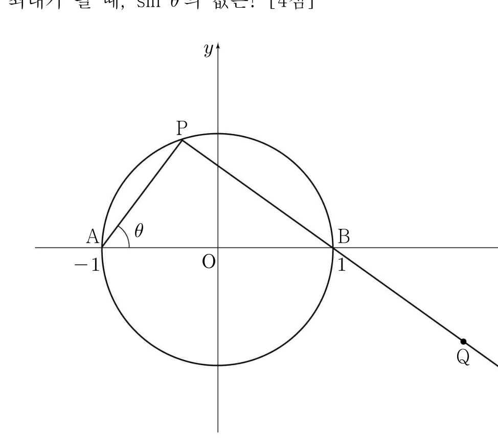

원본 풀이 (내부용)[출제의도] 부채꼴의 중심각의 크기 계산하기
부채꼴의 호의 길이를 \(l\), 반지름의 길이를 \(r\), 중심각의 크기를 \(\theta\)라 하면 \(l=r\theta\)이므로 \(6\pi=8\theta\)이다.
그러므로 \(\theta=\dfrac34\pi\)이다.
생성기 숫자판 1/6 · G2M1-02#18반지름의 길이가 $5$이고 호의 길이가 $\frac{25}{6}\pi$인 부채꼴의 중심각의 크기로 옳은 것을 고르세요.
① $\frac{\pi}{2}$② $\frac{2}{3}\pi$③ $\frac{3}{4}\pi$④ $\frac{5}{6}\pi$⑤ $\pi$
정답④ $\frac{5}{6}\pi$ 중심각의 크기를 $\theta$라 하면 $l=r\theta$이므로 $\frac{25}{6}\pi=5\theta$ $\theta=\frac{5}{6}\pi$
숫자: 원본 8 6 → 쌍둥이 5 25 6 · 같은 수: 6
생성기 숫자판 2/6 · G2M1-02#18반지름의 길이가 $3$이고 호의 길이가 $\frac{\pi}{2}$인 부채꼴의 중심각의 크기로 옳은 것을 고르세요.
① $\frac{\pi}{6}$② $\frac{\pi}{4}$③ $\frac{\pi}{3}$④ $\frac{\pi}{2}$⑤ $\frac{2}{3}\pi$
정답① $\frac{\pi}{6}$ 중심각의 크기를 $\theta$라 하면 $l=r\theta$이므로 $\frac{\pi}{2}=3\theta$ $\theta=\frac{\pi}{6}$
숫자: 원본 8 6 → 쌍둥이 3 2
생성기 숫자판 3/6 · G2M1-02#18반지름의 길이가 $6$이고 호의 길이가 $4\pi$인 부채꼴의 중심각의 크기로 옳은 것을 고르세요.
① $\frac{\pi}{3}$② $\frac{\pi}{2}$③ $\frac{2}{3}\pi$④ $\frac{3}{4}\pi$⑤ $\frac{5}{6}\pi$
정답③ $\frac{2}{3}\pi$ 중심각의 크기를 $\theta$라 하면 $l=r\theta$이므로 $4\pi=6\theta$ $\theta=\frac{2}{3}\pi$
숫자: 원본 8 6 → 쌍둥이 6 4 · 같은 수: 6
생성기 숫자판 4/6 · G2M1-02#18반지름의 길이가 $9$이고 호의 길이가 $\frac{15}{2}\pi$인 부채꼴의 중심각의 크기로 옳은 것을 고르세요.
① $\frac{\pi}{2}$② $\frac{2}{3}\pi$③ $\frac{3}{4}\pi$④ $\frac{5}{6}\pi$⑤ $\pi$
정답④ $\frac{5}{6}\pi$ 중심각의 크기를 $\theta$라 하면 $l=r\theta$이므로 $\frac{15}{2}\pi=9\theta$ $\theta=\frac{5}{6}\pi$
숫자: 원본 8 6 → 쌍둥이 9 15 2
생성기 숫자판 5/6 · G2M1-02#18반지름의 길이가 $4$이고 호의 길이가 $\frac{8}{3}\pi$인 부채꼴의 중심각의 크기로 옳은 것을 고르세요.
① $\frac{\pi}{3}$② $\frac{\pi}{2}$③ $\frac{2}{3}\pi$④ $\frac{3}{4}\pi$⑤ $\frac{5}{6}\pi$
정답③ $\frac{2}{3}\pi$ 중심각의 크기를 $\theta$라 하면 $l=r\theta$이므로 $\frac{8}{3}\pi=4\theta$ $\theta=\frac{2}{3}\pi$
숫자: 원본 8 6 → 쌍둥이 4 8 3 · 같은 수: 8
생성기 숫자판 6/6 · G2M1-02#18반지름의 길이가 $3$이고 호의 길이가 $\frac{9}{4}\pi$인 부채꼴의 중심각의 크기로 옳은 것을 고르세요.
① $\frac{\pi}{2}$② $\frac{2}{3}\pi$③ $\frac{3}{4}\pi$④ $\frac{5}{6}\pi$⑤ $\pi$
정답③ $\frac{3}{4}\pi$ 중심각의 크기를 $\theta$라 하면 $l=r\theta$이므로 $\frac{9}{4}\pi=3\theta$ $\theta=\frac{3}{4}\pi$
숫자: 원본 8 6 → 쌍둥이 3 9 4
4. 2020년 6월 4번 · 3점 · 수학Ⅰ 삼각함수 · G2M1-02#7
원본 (내부용)$\frac{\pi }{2} \le x \le \pi$일 때, 방정식 $sinx= \frac{1}{2}$의 해는? [3점]
원본 풀이 (내부용)[출제의도] 삼각함수의 그래프를 이용하여 삼각함수가 포함된 방정식 이해하기
그림은 \(y=\sin x\)의 그래프와 직선 \(y=\dfrac12\)를 나타낸다. \(x\)축에는 \(0,\dfrac{\pi}{2},\dfrac{5\pi}{6},\pi,2\pi\)가 표시되어 있고, 교점의 \(x\)좌표는 \(\dfrac{5\pi}{6}\)이다.
\(
\sin\frac{\pi}{6}=\frac12
\)
이므로 \(\dfrac{\pi}{2}\le x\le\pi\)일 때 함수 \(y=\sin x\)의 그래프와 직선 \(y=\dfrac12\)이 만나는 점의 \(x\)좌표는 \(\dfrac{5\pi}{6}\)이다. 따라서 방정식 \(\sin x=\dfrac12\)의 해는 \(x=\dfrac{5\pi}{6}\)이다.
생성기 숫자판 1/6 · G2M1-02#7$\pi\le x\le \frac{3}{2}\pi$일 때, 방정식 $\sin x=-\frac{\sqrt{3}}{2}$의 해로 옳은 것을 고르세요.
① $\pi$② $\frac{7}{6}\pi$③ $\frac{5}{4}\pi$④ $\frac{4}{3}\pi$⑤ $\frac{3}{2}\pi$
① $- \frac{5}{4}$② $- \frac{3}{4}$③ $- \frac{1}{4}$④ $\frac{1}{4}$⑤ $\frac{3}{4}$
원본 정답 ⑤
원본 풀이 (내부용)[출제의도] 삼각함수 사이의 관계를 이용하여 함수값 계산하기
\(
\sin^2\theta+\cos^2\theta=1,\qquad \cos\theta=-\frac45
\)
이므로
\(
\sin^2\theta=1-\cos^2\theta=1-\frac{16}{25}=\frac9{25}
\)
이다. \(\pi<\theta<\dfrac32\pi\)이므로 \(\sin\theta=-\dfrac35\)이다. 그러므로
\(
\tan\theta=\frac{\sin\theta}{\cos\theta}=\frac34
\)
이다.
생성기 숫자판 1/6 · G2M1-02#5$\frac{\pi}{2}<\theta<\pi$인 $\theta$에 대하여 $\cos\theta=-\frac{1}{13}$일 때, $\tan\theta$의 값으로 옳은 것을 고르세요.
① $-4\sqrt{42}$② $-2\sqrt{42}-3$③ $-2\sqrt{42}-2$④ $-2\sqrt{42}-1$⑤ $-2\sqrt{42}$
정답⑤ $-2\sqrt{42}$ $\sin^{2}\theta=1-\cos^{2}\theta=1-\frac{1}{169}=\frac{168}{169}$ $\frac{\pi}{2}<\theta<\pi$에서 $\sin\theta>0$이므로 $\sin\theta=\frac{2\sqrt{42}}{13}$ 따라서 $\tan\theta=\frac{\sin\theta}{\cos\theta}=-2\sqrt{42}$
숫자: 원본 3 2 4 5 → 쌍둥이 2 1 13 · 같은 수: 2
생성기 숫자판 2/6 · G2M1-02#5$\pi<\theta<\frac{3}{2}\pi$인 $\theta$에 대하여 $\sin\theta=-\frac{1}{13}$일 때, $\tan\theta$의 값으로 옳은 것을 고르세요.
① $-2\sqrt{42}$② $-\frac{\sqrt{42}}{84}$③ $\frac{\sqrt{42}}{168}$④ $\frac{\sqrt{42}}{84}$⑤ $2\sqrt{42}$
정답④ $\frac{\sqrt{42}}{84}$ $\cos^{2}\theta=1-\sin^{2}\theta=1-\frac{1}{169}=\frac{168}{169}$ $\pi<\theta<\frac{3}{2}\pi$에서 $\cos\theta<0$이므로 $\cos\theta=-\frac{2\sqrt{42}}{13}$ 따라서 $\tan\theta=\frac{\sin\theta}{\cos\theta}=\frac{\sqrt{42}}{84}$
숫자: 원본 3 2 4 5 → 쌍둥이 3 2 1 13 · 같은 수: 2 3
생성기 숫자판 3/6 · G2M1-02#5$\frac{3}{2}\pi<\theta<2\pi$인 $\theta$에 대하여 $\cos\theta=\frac{1}{13}$일 때, $\sin\theta$의 값으로 옳은 것을 고르세요.
① $-\frac{4\sqrt{42}}{13}$② $-\frac{13\sqrt{42}}{84}$③ $-\frac{2\sqrt{42}}{13}$④ $\frac{2\sqrt{42}}{13}$⑤ $\frac{13\sqrt{42}}{84}$
생성기 숫자판 6/6 · G2M1-02#5$\frac{3}{2}\pi<\theta<2\pi$인 $\theta$에 대하여 $\cos\theta=\frac{1}{3}$일 때, $\tan\theta$의 값으로 옳은 것을 고르세요.
① $-2\sqrt{2}$② $-\sqrt{2}$③ $-\frac{\sqrt{2}}{4}$④ $\frac{\sqrt{2}}{4}$⑤ $2\sqrt{2}$
정답① $-2\sqrt{2}$ $\sin^{2}\theta=1-\cos^{2}\theta=1-\frac{1}{9}=\frac{8}{9}$ $\frac{3}{2}\pi<\theta<2\pi$에서 $\sin\theta<0$이므로 $\sin\theta=-\frac{2\sqrt{2}}{3}$ 따라서 $\tan\theta=\frac{\sin\theta}{\cos\theta}=-2\sqrt{2}$
숫자: 원본 3 2 4 5 → 쌍둥이 3 2 2 1 3 · 같은 수: 2 3
7. 2020년 6월 7번 · 3점 · 수학Ⅰ 지수·로그 · G2M1-04#3
원본 (내부용)$-1 \le x \le 2$에서 함수 $f ( x ) =2+ ( \frac{1}{3} )^{2x}$의 최댓값은? [3점]
① $11$② $13$③ $15$④ $17$⑤ $19$
원본 정답 ①
원본 풀이 (내부용)[출제의도] 지수함수의 그래프 이해하기
\(
-1\le x\le2
\)
에서 함수
\(
f(x)=2+\left(\frac13\right)^{2x}
\)
은 \(x\)의 값이 증가하면 \(f(x)\)의 값이 감소하므로 \(x=-1\)일 때 최댓값을 갖는다.
\(
f(-1)=2+\left(\frac13\right)^{-2}=2+9=11
\)
이므로 최댓값은 11이다.
생성기 숫자판 1/6 · G2M1-04#3$0\le x\le 2$에서 함수 $f\left(x\right)=\left(\frac{1}{5}\right)^{-x}-1$의 최댓값으로 옳은 것을 고르세요.
① $0$② $24$③ $25$④ $26$⑤ $49$
정답② $24$ 밑 $\frac{1}{5}$이 $0$과 $1$ 사이이고 지수 $-x$는 $x$가 커질수록 작아지므로 함수 $f\left(x\right)$는 $x$의 값이 커질수록 커집니다. 따라서 $x=2$일 때 최댓값을 가지므로 $f\left(2\right)=\left(\frac{1}{5}\right)^{-2}-1$ $=25-1$ $=24$
숫자: 원본 1 2 2 1 3 → 쌍둥이 0 2 1 5 1 · 같은 수: 1 2
생성기 숫자판 2/6 · G2M1-04#3$-1\le x\le 0$에서 함수 $f\left(x\right)=\left(\frac{1}{3}\right)^{x-4}+1$의 최솟값으로 옳은 것을 고르세요.
① $80$② $81$③ $82$④ $83$⑤ $244$
정답③ $82$ 밑 $\frac{1}{3}$이 $0$과 $1$ 사이이고 지수 $x-4$는 $x$가 커질수록 커지므로 함수 $f\left(x\right)$는 $x$의 값이 커질수록 작아집니다. 따라서 $x=0$일 때 최솟값을 가지므로 $f\left(0\right)=\left(\frac{1}{3}\right)^{-4}+1$ $=81+1$ $=82$
숫자: 원본 1 2 2 1 3 → 쌍둥이 1 0 1 3 4 1 · 같은 수: 1 3
생성기 숫자판 3/6 · G2M1-04#3$-1\le x\le 1$에서 함수 $f\left(x\right)=\left(\frac{1}{5}\right)^{x-1}+1$의 최솟값으로 옳은 것을 고르세요.
① $-1$② $0$③ $1$④ $2$⑤ $26$
정답④ $2$ 밑 $\frac{1}{5}$이 $0$과 $1$ 사이이고 지수 $x-1$은 $x$가 커질수록 커지므로 함수 $f\left(x\right)$는 $x$의 값이 커질수록 작아집니다. 따라서 $x=1$일 때 최솟값을 가지므로 $f\left(1\right)=\left(\frac{1}{5}\right)^{0}+1$ $=1+1$ $=2$
숫자: 원본 1 2 2 1 3 → 쌍둥이 1 1 1 5 1 1 · 같은 수: 1
생성기 숫자판 4/6 · G2M1-04#3$-1\le x\le 2$에서 함수 $f\left(x\right)=\left(\frac{1}{2}\right)^{x+1}+4$의 최댓값으로 옳은 것을 고르세요.
① $\frac{33}{8}$② $5$③ $6$④ $7$⑤ $8$
정답② $5$ 밑 $\frac{1}{2}$이 $0$과 $1$ 사이이고 지수 $x+1$은 $x$가 커질수록 커지므로 함수 $f\left(x\right)$는 $x$의 값이 커질수록 작아집니다. 따라서 $x=-1$일 때 최댓값을 가지므로 $f\left(-1\right)=\left(\frac{1}{2}\right)^{0}+4$ $=1+4$ $=5$
숫자: 원본 1 2 2 1 3 → 쌍둥이 1 2 1 2 1 4 · 같은 수: 1 2
생성기 숫자판 5/6 · G2M1-04#3$-1\le x\le 0$에서 함수 $f\left(x\right)=\left(\frac{1}{3}\right)^{x-1}+4$의 최댓값으로 옳은 것을 고르세요.
① $7$② $11$③ $12$④ $13$⑤ $14$
정답④ $13$ 밑 $\frac{1}{3}$이 $0$과 $1$ 사이이고 지수 $x-1$은 $x$가 커질수록 커지므로 함수 $f\left(x\right)$는 $x$의 값이 커질수록 작아집니다. 따라서 $x=-1$일 때 최댓값을 가지므로 $f\left(-1\right)=\left(\frac{1}{3}\right)^{-2}+4$ $=9+4$ $=13$
숫자: 원본 1 2 2 1 3 → 쌍둥이 1 0 1 3 1 4 · 같은 수: 1 3
생성기 숫자판 6/6 · G2M1-04#3$-1\le x\le 1$에서 함수 $f\left(x\right)=2^{-x+4}+1$의 최댓값으로 옳은 것을 고르세요.
① $9$② $30$③ $31$④ $32$⑤ $33$
정답⑤ $33$ 밑 $2$가 $1$보다 크고 지수 $-x+4$는 $x$가 커질수록 작아지므로 함수 $f\left(x\right)$는 $x$의 값이 커질수록 작아집니다. 따라서 $x=-1$일 때 최댓값을 가지므로 $f\left(-1\right)=2^{5}+1$ $=32+1$ $=33$
숫자: 원본 1 2 2 1 3 → 쌍둥이 1 1 2 4 1 · 같은 수: 1 2
8. 2020년 6월 8번 · 3점 · 수학Ⅰ 지수·로그 · G2M1-01#6
원본 (내부용)함수 $y=\log_{2} x$의 그래프를 $x$축의 방향으로 $a$만큼, $y$축의 방향으로 $1$만큼 평행이동한 그래프가 점 $( 9,3 )$을 지날 때, 상수 $a$의 값은? [3점]
① $5$② $6$③ $7$④ $8$⑤ $9$
원본 정답 ①
원본 풀이 (내부용)[출제의도] 로그함수의 그래프 이해하기
함수 \(y=\log_2x\)의 그래프를 \(x\)축의 양의 방향으로 \(a\)만큼, \(y\)축의 방향으로 1만큼 평행이동한 그래프를 나타내는 함수는
\(
y=\log_2(x-a)+1
\)
이다. 이 함수의 그래프가 점 \((9,3)\)을 지나므로
\(
3=\log_2(9-a)+1
\)
에서 \(2=\log_2(9-a)\)이다. 따라서 \(9-a=4\)이고 \(a=5\)이다.
생성기 숫자판 1/6 · G2M1-01#6함수 $y=\log_{2}x$의 그래프를 $x$축의 방향으로 $a$만큼, $y$축의 방향으로 $4$만큼 평행이동한 그래프가 점 $\left(11,\ 6\right)$을 지날 때, 상수 $a$의 값으로 옳은 것을 고르세요.
① $-7$② $4$③ $5$④ $6$⑤ $7$
정답⑤ $7$ 평행이동한 그래프의 식은 $y=\log_{2}\left(x-a\right)+4$ 점 $\left(11,\ 6\right)$을 지나므로 $6=\log_{2}\left(11-a\right)+4$ $\log_{2}\left(11-a\right)=2$이므로 $11-a=2^{2}=4$ 따라서 $a=7$
숫자: 원본 2 1 9 3 → 쌍둥이 2 4 11 6 · 같은 수: 2
생성기 숫자판 2/6 · G2M1-01#6함수 $y=\log_{3}x$의 그래프를 $x$축의 방향으로 $a$만큼, $y$축의 방향으로 $-2$만큼 평행이동한 그래프가 점 $\left(6,\ -1\right)$을 지날 때, 상수 $a$의 값으로 옳은 것을 고르세요.
① $3$② $4$③ $5$④ $6$⑤ $7$
정답① $3$ 평행이동한 그래프의 식은 $y=\log_{3}\left(x-a\right)-2$ 점 $\left(6,\ -1\right)$을 지나므로 $-1=\log_{3}\left(6-a\right)-2$ $\log_{3}\left(6-a\right)=1$이므로 $6-a=3^{1}=3$ 따라서 $a=3$
숫자: 원본 2 1 9 3 → 쌍둥이 3 2 6 1 · 같은 수: 1 2 3
생성기 숫자판 3/6 · G2M1-01#6함수 $y=\log_{3}x$의 그래프를 $x$축의 방향으로 $a$만큼, $y$축의 방향으로 $2$만큼 평행이동한 그래프가 점 $\left(17,\ 4\right)$를 지날 때, 상수 $a$의 값으로 옳은 것을 고르세요.
① $-8$② $5$③ $6$④ $7$⑤ $8$
정답⑤ $8$ 평행이동한 그래프의 식은 $y=\log_{3}\left(x-a\right)+2$ 점 $\left(17,\ 4\right)$를 지나므로 $4=\log_{3}\left(17-a\right)+2$ $\log_{3}\left(17-a\right)=2$이므로 $17-a=3^{2}=9$ 따라서 $a=8$
숫자: 원본 2 1 9 3 → 쌍둥이 3 2 17 4 · 같은 수: 2 3
생성기 숫자판 4/6 · G2M1-01#6함수 $y=\log_{3}x$의 그래프를 $x$축의 방향으로 $a$만큼, $y$축의 방향으로 $1$만큼 평행이동한 그래프가 점 $\left(1,\ 2\right)$를 지날 때, 상수 $a$의 값으로 옳은 것을 고르세요.
① $-5$② $-4$③ $-3$④ $-2$⑤ $-1$
정답④ $-2$ 평행이동한 그래프의 식은 $y=\log_{3}\left(x-a\right)+1$ 점 $\left(1,\ 2\right)$를 지나므로 $2=\log_{3}\left(1-a\right)+1$ $\log_{3}\left(1-a\right)=1$이므로 $1-a=3^{1}=3$ 따라서 $a=-2$
숫자: 원본 2 1 9 3 → 쌍둥이 3 1 1 2 · 같은 수: 1 2 3
생성기 숫자판 5/6 · G2M1-01#6함수 $y=\log_{2}x$의 그래프를 $x$축의 방향으로 $a$만큼, $y$축의 방향으로 $-2$만큼 평행이동한 그래프가 점 $\left(5,\ 1\right)$을 지날 때, 상수 $a$의 값으로 옳은 것을 고르세요.
① $-7$② $-6$③ $-5$④ $-4$⑤ $-3$
정답⑤ $-3$ 평행이동한 그래프의 식은 $y=\log_{2}\left(x-a\right)-2$ 점 $\left(5,\ 1\right)$을 지나므로 $1=\log_{2}\left(5-a\right)-2$ $\log_{2}\left(5-a\right)=3$이므로 $5-a=2^{3}=8$ 따라서 $a=-3$
숫자: 원본 2 1 9 3 → 쌍둥이 2 2 5 1 · 같은 수: 1 2
생성기 숫자판 6/6 · G2M1-01#6함수 $y=\log_{2}x$의 그래프를 $x$축의 방향으로 $a$만큼, $y$축의 방향으로 $2$만큼 평행이동한 그래프가 점 $\left(2,\ 4\right)$를 지날 때, 상수 $a$의 값으로 옳은 것을 고르세요.
① $-3$② $-2$③ $-1$④ $0$⑤ $1$
정답② $-2$ 평행이동한 그래프의 식은 $y=\log_{2}\left(x-a\right)+2$ 점 $\left(2,\ 4\right)$를 지나므로 $4=\log_{2}\left(2-a\right)+2$ $\log_{2}\left(2-a\right)=2$이므로 $2-a=2^{2}=4$ 따라서 $a=-2$
숫자: 원본 2 1 9 3 → 쌍둥이 2 2 2 4 · 같은 수: 2
9. 2020년 6월 9번 · 3점 · 수학Ⅰ 지수·로그 · G2M1-01b#4
원본 (내부용)함수 $y=2^{x} -1$의 그래프의 점근선과 함수 $y=\log_{2} ( x+k )$의 그래프가 만나는 점이 $y$축 위에 있을 때, 상수 $k$의 값은? [3점]
① $\frac{1}{4}$② $\frac{1}{2}$③ $\frac{3}{4}$④ $1$⑤ $\frac{5}{4}$
원본 정답 ②
원본 풀이 (내부용)[출제의도] 지수함수의 그래프를 이용해서 로그함수가 포함된 방정식 이해하기
함수 \(y=2^x-1\)의 그래프의 점근선이 \(y=-1\)이므로 \(y\)축과의 교점의 좌표는 \((0,-1)\)이다. 함수 \(y=\log_2(x+k)\)의 그래프는 점 \((0,-1)\)을 지난다.
그러므로
\(
-1=\log_2k
\)
이고 \(k=\dfrac12\)이다.
생성기 숫자판 1/6 · G2M1-01b#4함수 $y=4^{x}+1$의 그래프의 점근선과 함수 $y=\log_{4}\left(x+k\right)$의 그래프가 만나는 점이 $y$축 위에 있을 때, 상수 $k$의 값으로 옳은 것을 고르세요.
① $2$② $3$③ $4$④ $5$⑤ $6$
정답③ $4$ 함수 $y=4^{x}+1$의 그래프의 점근선은 직선 $y=1$ 이 직선과 함수 $y=\log_{4}\left(x+k\right)$의 그래프가 $y$축 위의 점 $\left(0,\ 1\right)$에서 만나므로 $\log_{4}k=1$ 따라서 $k=4^{1}=4$
숫자: 원본 2 1 2 → 쌍둥이 4 1 4 · 같은 수: 1
생성기 숫자판 2/6 · G2M1-01b#4함수 $y=5^{x}+1$의 그래프의 점근선과 함수 $y=\log_{5}\left(x+k\right)$의 그래프가 만나는 점이 $y$축 위에 있을 때, 상수 $k$의 값으로 옳은 것을 고르세요.
① $4$② $5$③ $6$④ $7$⑤ $8$
정답② $5$ 함수 $y=5^{x}+1$의 그래프의 점근선은 직선 $y=1$ 이 직선과 함수 $y=\log_{5}\left(x+k\right)$의 그래프가 $y$축 위의 점 $\left(0,\ 1\right)$에서 만나므로 $\log_{5}k=1$ 따라서 $k=5^{1}=5$
숫자: 원본 2 1 2 → 쌍둥이 5 1 5 · 같은 수: 1
생성기 숫자판 3/6 · G2M1-01b#4함수 $y=5^{x}-1$의 그래프의 점근선과 함수 $y=\log_{5}\left(x+k\right)$의 그래프가 만나는 점이 $y$축 위에 있을 때, 상수 $k$의 값으로 옳은 것을 고르세요.
① $\frac{1}{10}$② $\frac{1}{5}$③ $\frac{3}{10}$④ $\frac{2}{5}$⑤ $\frac{1}{2}$
정답② $\frac{1}{5}$ 함수 $y=5^{x}-1$의 그래프의 점근선은 직선 $y=-1$ 이 직선과 함수 $y=\log_{5}\left(x+k\right)$의 그래프가 $y$축 위의 점 $\left(0,\ -1\right)$에서 만나므로 $\log_{5}k=-1$ 따라서 $k=5^{-1}=\frac{1}{5}$
숫자: 원본 2 1 2 → 쌍둥이 5 1 5 · 같은 수: 1
생성기 숫자판 4/6 · G2M1-01b#4함수 $y=6^{x}+1$의 그래프의 점근선과 함수 $y=\log_{6}\left(x+k\right)$의 그래프가 만나는 점이 $y$축 위에 있을 때, 상수 $k$의 값으로 옳은 것을 고르세요.
① $4$② $5$③ $6$④ $7$⑤ $8$
정답③ $6$ 함수 $y=6^{x}+1$의 그래프의 점근선은 직선 $y=1$ 이 직선과 함수 $y=\log_{6}\left(x+k\right)$의 그래프가 $y$축 위의 점 $\left(0,\ 1\right)$에서 만나므로 $\log_{6}k=1$ 따라서 $k=6^{1}=6$
숫자: 원본 2 1 2 → 쌍둥이 6 1 6 · 같은 수: 1
생성기 숫자판 5/6 · G2M1-01b#4함수 $y=7^{x}+1$의 그래프의 점근선과 함수 $y=\log_{7}\left(x+k\right)$의 그래프가 만나는 점이 $y$축 위에 있을 때, 상수 $k$의 값으로 옳은 것을 고르세요.
① $7$② $8$③ $9$④ $10$⑤ $11$
정답① $7$ 함수 $y=7^{x}+1$의 그래프의 점근선은 직선 $y=1$ 이 직선과 함수 $y=\log_{7}\left(x+k\right)$의 그래프가 $y$축 위의 점 $\left(0,\ 1\right)$에서 만나므로 $\log_{7}k=1$ 따라서 $k=7^{1}=7$
숫자: 원본 2 1 2 → 쌍둥이 7 1 7 · 같은 수: 1
생성기 숫자판 6/6 · G2M1-01b#4함수 $y=3^{x}+2$의 그래프의 점근선과 함수 $y=\log_{3}\left(x+k\right)$의 그래프가 만나는 점이 $y$축 위에 있을 때, 상수 $k$의 값으로 옳은 것을 고르세요.
① $5$② $6$③ $7$④ $8$⑤ $9$
정답⑤ $9$ 함수 $y=3^{x}+2$의 그래프의 점근선은 직선 $y=2$ 이 직선과 함수 $y=\log_{3}\left(x+k\right)$의 그래프가 $y$축 위의 점 $\left(0,\ 2\right)$에서 만나므로 $\log_{3}k=2$ 따라서 $k=3^{2}=9$
숫자: 원본 2 1 2 → 쌍둥이 3 2 3 · 같은 수: 2
10. 2020년 6월 10번 · 3점 · 수학Ⅰ 삼각함수 · G2f-01#0
원본 (내부용)세 상수 $a$, $b$, $c$에 대하여 함수 $y=asinbx+c$의 그래프가 그림과 같을 때, $a+b+c$의 값은? (단, $a>0$, $b>0$) [3점] $x$ $y$ $\mathrm{O}$ $\frac{\pi }{4}$ $-1$ $3$ $y=asinbx+c$ $\frac{5}{4} \pi$
① $4$② $5$③ $6$④ $7$⑤ $8$
원본 정답 ②
원본 풀이 (내부용)[출제의도] 삼각함수의 그래프 이해하기
주어진 삼각함수
\(
y=a\sin bx+c\quad(a>0,\ b>0)
\)
의 최댓값이 3, 최솟값이 \(-1\)이므로
\(
a+c=3,\qquad -a+c=-1
\)
에서 \(a=2,\ c=1\)이다.
또한, 주어진 그래프에서 삼각함수의 주기가
\(
\frac54\pi-\frac14\pi=\pi
\)
이므로 \(\dfrac{2\pi}{b}=\pi\)이고 \(b=2\)이다. 따라서 \(a+b+c=5\)이다.
생성기 숫자판 1/6 · G2f-01#0세 상수 $a$, $b$, $c$에 대하여 함수 $y=a\sin bx+c$ ($a+c=5$, $-a+c=-1$)의 그래프가 그림과 같을 때, $a+b+c$의 값으로 옳은 것을 고르세요. (단, $a>0$, $b>0$)
원본 풀이 (내부용)[출제의도] 지수함수가 포함된 부등식 이해하기
\(
2^x=t
\)
로 놓으면 \(t>0\)이다. 주어진 부등식은 \(t^2-10t+16\le0\)이다.
\(
(t-2)(t-8)\le0
\)
에서 \(2\le t\le8\)이다. 따라서 \(2\le2^x\le8\), 즉 \(1\le x\le3\)이다. 따라서 모든 자연수 \(x\)의 값의 합은 6이다.
생성기 숫자판 1/6 · G2M1-04#19부등식 $4^{x}-9\times 2^{x}+8\le 0$을 만족시키는 모든 자연수 $x$의 값의 합으로 옳은 것을 고르세요.
원본 (내부용)별의 밝기를 나타내는 방법으로 절대 등급과 광도가 있다. 임의의 두 별 $A$, $B$에 대하여 별 $A$의 절대 등급과 광도를 각각 $M_{A}$, $L_{A}$라 하고, 별 $B$의 절대 등급과 광도를 각각 $M_{B}$, $L_{B}$라 하면 다음과 같은 관계식이 성립한다고 한다. $M_{A} -M_{B} = -2.5\log ( \frac{L_{A}}{L_{B}} )$ (단, 광도의 단위는 $\mathrm{W}$이다.) 절대 등급이 $4.8$인 별의 광도가 $L$일 때, 절대 등급이 $1.3$인 별의 광도는 $kL$이다. 상수 $k$의 값은? [3점]
① $10^{\frac{11}{10}}$② $10^{\frac{6}{5}}$③ $10^{\frac{13}{10}}$④ $10^{\frac{7}{5}}$⑤ $10^{\frac{3}{2}}$
원본 정답 ④
원본 풀이 (내부용)[출제의도] 로그의 성질을 이용하여 수학 외적 문제 해결하기
\(\)
생성기 숫자판 1/6 · G2M8-01#4두 별 $\mathrm{A}$, $\mathrm{B}$의 절대 등급을 각각 $M_{\mathrm{A}}$, $M_{\mathrm{B}}$, 광도를 각각 $L_{\mathrm{A}}$, $L_{\mathrm{B}}$라 하면 관계식 $M_{\mathrm{A}}-M_{\mathrm{B}}=-2.5\log\left(\frac{L_{\mathrm{A}}}{L_{\mathrm{B}}}\right)$가 성립한다고 합니다. 절대 등급이 $6.1$인 별의 광도가 $L$일 때, 절대 등급이 $2.1$인 별의 광도는 $kL$입니다. 상수 $k$의 값으로 옳은 것을 고르세요. (단, 광도의 단위는 $\mathrm{W}$입니다.)
① $10^{\frac{13}{10}}$② $10^{\frac{6}{5}}$③ $10^{\frac{8}{5}}$④ $10^{\frac{3}{2}}$⑤ $10^{\frac{7}{5}}$
정답③ $10^{\frac{8}{5}}$ 별 $\mathrm{A}$의 절대 등급이 $2.1$, 광도가 $kL$이고 별 $\mathrm{B}$의 절대 등급이 $6.1$, 광도가 $L$이라 하면 $2.1-6.1=-2.5\log\left(\frac{kL}{L}\right)$ $-4=-\frac{5}{2}\log k$이므로 $\log k=\frac{8}{5}$ 따라서 $k=10^{\frac{8}{5}}$
생성기 숫자판 2/6 · G2M8-01#4두 별 $\mathrm{A}$, $\mathrm{B}$의 절대 등급을 각각 $M_{\mathrm{A}}$, $M_{\mathrm{B}}$, 광도를 각각 $L_{\mathrm{A}}$, $L_{\mathrm{B}}$라 하면 관계식 $M_{\mathrm{A}}-M_{\mathrm{B}}=-2.5\log\left(\frac{L_{\mathrm{A}}}{L_{\mathrm{B}}}\right)$가 성립한다고 합니다. 절대 등급이 $5.4$인 별의 광도가 $L$일 때, 절대 등급이 $2.4$인 별의 광도는 $kL$입니다. 상수 $k$의 값으로 옳은 것을 고르세요. (단, 광도의 단위는 $\mathrm{W}$입니다.)
① $10^{\frac{3}{2}}$② $10^{\frac{8}{5}}$③ $10^{\frac{6}{5}}$④ $10^{\frac{13}{10}}$⑤ $10^{\frac{7}{5}}$
정답③ $10^{\frac{6}{5}}$ 별 $\mathrm{A}$의 절대 등급이 $2.4$, 광도가 $kL$이고 별 $\mathrm{B}$의 절대 등급이 $5.4$, 광도가 $L$이라 하면 $2.4-5.4=-2.5\log\left(\frac{kL}{L}\right)$ $-3=-\frac{5}{2}\log k$이므로 $\log k=\frac{6}{5}$ 따라서 $k=10^{\frac{6}{5}}$
생성기 숫자판 3/6 · G2M8-01#4두 별 $\mathrm{A}$, $\mathrm{B}$의 절대 등급을 각각 $M_{\mathrm{A}}$, $M_{\mathrm{B}}$, 광도를 각각 $L_{\mathrm{A}}$, $L_{\mathrm{B}}$라 하면 관계식 $M_{\mathrm{A}}-M_{\mathrm{B}}=-2.5\log\left(\frac{L_{\mathrm{A}}}{L_{\mathrm{B}}}\right)$가 성립한다고 합니다. 절대 등급이 $5.7$인 별의 광도가 $L$일 때, 절대 등급이 $1.7$인 별의 광도는 $kL$입니다. 상수 $k$의 값으로 옳은 것을 고르세요. (단, 광도의 단위는 $\mathrm{W}$입니다.)
① $10^{\frac{3}{2}}$② $10^{\frac{8}{5}}$③ $10^{\frac{9}{5}}$④ $10^{\frac{17}{10}}$⑤ $10^{\frac{7}{5}}$
정답② $10^{\frac{8}{5}}$ 별 $\mathrm{A}$의 절대 등급이 $1.7$, 광도가 $kL$이고 별 $\mathrm{B}$의 절대 등급이 $5.7$, 광도가 $L$이라 하면 $1.7-5.7=-2.5\log\left(\frac{kL}{L}\right)$ $-4=-\frac{5}{2}\log k$이므로 $\log k=\frac{8}{5}$ 따라서 $k=10^{\frac{8}{5}}$
생성기 숫자판 4/6 · G2M8-01#4두 별 $\mathrm{A}$, $\mathrm{B}$의 절대 등급을 각각 $M_{\mathrm{A}}$, $M_{\mathrm{B}}$, 광도를 각각 $L_{\mathrm{A}}$, $L_{\mathrm{B}}$라 하면 관계식 $M_{\mathrm{A}}-M_{\mathrm{B}}=-2.5\log\left(\frac{L_{\mathrm{A}}}{L_{\mathrm{B}}}\right)$가 성립한다고 합니다. 절대 등급이 $3.9$인 별의 광도가 $L$일 때, 절대 등급이 $-0.1$인 별의 광도는 $kL$입니다. 상수 $k$의 값으로 옳은 것을 고르세요. (단, 광도의 단위는 $\mathrm{W}$입니다.)
① $10^{\frac{17}{10}}$② $10^{\frac{3}{2}}$③ $10^{\frac{8}{5}}$④ $10^{\frac{9}{5}}$⑤ $10^{\frac{7}{5}}$
정답③ $10^{\frac{8}{5}}$ 별 $\mathrm{A}$의 절대 등급이 $-0.1$, 광도가 $kL$이고 별 $\mathrm{B}$의 절대 등급이 $3.9$, 광도가 $L$이라 하면 $-0.1-3.9=-2.5\log\left(\frac{kL}{L}\right)$ $-4=-\frac{5}{2}\log k$이므로 $\log k=\frac{8}{5}$ 따라서 $k=10^{\frac{8}{5}}$
생성기 숫자판 5/6 · G2M8-01#4두 별 $\mathrm{A}$, $\mathrm{B}$의 절대 등급을 각각 $M_{\mathrm{A}}$, $M_{\mathrm{B}}$, 광도를 각각 $L_{\mathrm{A}}$, $L_{\mathrm{B}}$라 하면 관계식 $M_{\mathrm{A}}-M_{\mathrm{B}}=-2.5\log\left(\frac{L_{\mathrm{A}}}{L_{\mathrm{B}}}\right)$가 성립한다고 합니다. 절대 등급이 $6.0$인 별의 광도가 $L$일 때, 절대 등급이 $3.0$인 별의 광도는 $kL$입니다. 상수 $k$의 값으로 옳은 것을 고르세요. (단, 광도의 단위는 $\mathrm{W}$입니다.)
① $10^{\frac{6}{5}}$② $10^{\frac{9}{10}}$③ $10^{\frac{11}{10}}$④ $10^{\frac{13}{10}}$⑤ $10$
정답① $10^{\frac{6}{5}}$ 별 $\mathrm{A}$의 절대 등급이 $3.0$, 광도가 $kL$이고 별 $\mathrm{B}$의 절대 등급이 $6.0$, 광도가 $L$이라 하면 $3.0-6.0=-2.5\log\left(\frac{kL}{L}\right)$ $-3=-\frac{5}{2}\log k$이므로 $\log k=\frac{6}{5}$ 따라서 $k=10^{\frac{6}{5}}$
생성기 숫자판 6/6 · G2M8-01#4두 별 $\mathrm{A}$, $\mathrm{B}$의 절대 등급을 각각 $M_{\mathrm{A}}$, $M_{\mathrm{B}}$, 광도를 각각 $L_{\mathrm{A}}$, $L_{\mathrm{B}}$라 하면 관계식 $M_{\mathrm{A}}-M_{\mathrm{B}}=-2.5\log\left(\frac{L_{\mathrm{A}}}{L_{\mathrm{B}}}\right)$가 성립한다고 합니다. 절대 등급이 $5.0$인 별의 광도가 $L$일 때, 절대 등급이 $3.5$인 별의 광도는 $kL$입니다. 상수 $k$의 값으로 옳은 것을 고르세요. (단, 광도의 단위는 $\mathrm{W}$입니다.)
① $10^{\frac{1}{2}}$② $10^{\frac{3}{10}}$③ $10^{\frac{3}{5}}$④ $10^{\frac{2}{5}}$⑤ $10^{\frac{1}{5}}$
정답③ $10^{\frac{3}{5}}$ 별 $\mathrm{A}$의 절대 등급이 $3.5$, 광도가 $kL$이고 별 $\mathrm{B}$의 절대 등급이 $5.0$, 광도가 $L$이라 하면 $3.5-5.0=-2.5\log\left(\frac{kL}{L}\right)$ $-\frac{3}{2}=-\frac{5}{2}\log k$이므로 $\log k=\frac{3}{5}$ 따라서 $k=10^{\frac{3}{5}}$
원본 (내부용)함수 $y=3^{x} -a$의 역함수의 그래프가 두 점 $( 3,\log_{3} b )$, $( 2b,\log_{3} 12 )$를 지나도록 하는 두 상수 $a$, $b$에 대하여 $a+b$의 값은? [4점]
① $7$② $8$③ $9$④ $10$⑤ $11$
원본 정답 ①
원본 풀이 (내부용)[출제의도] 지수함수와 로그함수의 역함수 관계 이해하기
함수 \(y=3^x-a\)의 역함수의 그래프가 두 점 \((3,\log_3b)\), \((2b,\log_3 12)\)를 지나므로 함수 \(y=3^x-a\)의 그래프는 두 점 \((\log_3b,3)\), \((\log_3 12,2b)\)를 지난다.
따라서
\(
3=3^{\log_3b}-a,\qquad 2b=3^{\log_3 12}-a
\)
이다. 즉 \(3=b-a,\ 2b=12-a\)에서 \(a=2,\ b=5\)이다. 그러므로 \(a+b=7\)이다.
쌍둥이 1/5 · 4점 쌍둥이함수 $y=5^x-a$의 역함수 그래프가 $(4,\log_5 b)$, $(5b,\log_5 56)$를 지날 때, 두 상수 $a,b$에 대하여 $a+b$를 구하세요.
① $14$② $15$③ $16$④ $17$⑤ $18$
정답③ $16$ 역함수의 두 점을 바꾸면 원함수 그래프는 $(\log_5b,4)$와 $(\log_5 56,5b)$를 지난다. $b-a=4$, $56-a=5b$이므로 $b=a+4$를 대입하면 $a=6,b=10$이다. 따라서 $a+b=16$이다.
숫자: 원본 3 3 3 2 3 12 → 쌍둥이 5 4 5 5 5 56
쌍둥이 2/5 · 4점 쌍둥이함수 $y=5^x-a$의 역함수 그래프가 $(4,\log_5 b)$, $(3b,\log_5 24)$를 지날 때, 두 상수 $a,b$에 대하여 $a+b$를 구하세요.
① $8$② $9$③ $10$④ $11$⑤ $12$
정답③ $10$ 역함수의 두 점을 바꾸면 원함수 그래프는 $(\log_5b,4)$와 $(\log_5 24,3b)$를 지난다. $5^{\log_5b}-a=4$에서 $b-a=4$, $5^{\log_5 24}-a=3b$에서 $24-a=3b$이다. 연립하면 $a=3,b=7$이므로 $a+b=10$이다.
숫자: 원본 3 3 3 2 3 12 → 쌍둥이 5 4 5 3 5 24 · 같은 수: 3
쌍둥이 3/5 · 4점 쌍둥이함수 $y=7^x-a$의 역함수 그래프가 $(4,\log_7 b)$, $(4b,\log_7 41)$를 지날 때, 두 상수 $a,b$에 대하여 $a+b$를 구하세요.
① $12$② $13$③ $14$④ $15$⑤ $16$
정답③ $14$ 역함수의 두 점을 바꾸면 원함수 그래프는 $(\log_7b,4)$와 $(\log_7 41,4b)$를 지난다. $b-a=4$, $41-a=4b$이므로 $b=a+4$를 대입하면 $a=5,b=9$이다. 따라서 $a+b=14$이다.
숫자: 원본 3 3 3 2 3 12 → 쌍둥이 7 4 7 4 7 41
쌍둥이 4/5 · 4점 쌍둥이명제 「모든 실수 $x$에 대하여 $5x^2+16x+a\ge0$이다.」가 거짓이 되도록 하는 정수 $a$의 최댓값을 $A$라 할 때, 이 이차함수 그래프의 꼭짓점의 $x$좌표를 구하세요.
원본 (내부용)$0 \le x \le 2$에서 함수 $y=tanpix$의 그래프와 직선 $y=- \frac{10}{3} x+n$이 서로 다른 세 점에서 만나도록 하는 자연수 $n$의 최댓값은? [4점]
① $2$② $3$③ $4$④ $5$⑤ $6$
원본 정답 ⑤
원본 풀이 (내부용)[출제의도] 삼각함수의 그래프와 직선의 위치 관계를 찾는 문제 해결하기
\(
y=\tan\pi x
\)
의 주기는 \(\dfrac{\pi}{\pi}=1\)이다.
그림에는 \(y=\tan\pi x\)의 그래프와 직선
\(
y=-\frac{10}{3}x+n
\)
이 표시되어 있다. \(x\)축에는 \(0,1,2\)가 표시되어 있고, 탄젠트 그래프의 수직 점근선 및 직선과 그래프의 교점이 나타나 있다. 직선의 \(x\)절편은 \(\dfrac3{10}n\)으로 표시되어 있다.
위의 그림과 같이 \(0\le x\le2\)에서 함수 \(y=\tan\pi x\)의 그래프와 직선 \(y=-\dfrac{10}{3}x+n\)이 서로 다른 세 점에서 만나기 위해서는 직선의 \(x\)절편 \(\dfrac3{10}n\)이 2보다 작거나 같아야 한다. 즉,
\(
\frac3{10}n\le2
\)
이므로 \(n\le\dfrac{20}{3}\)이다. 따라서 자연수 \(n\)의 최댓값은 6이다.
쌍둥이 1/5 · 4점 쌍둥이$0\le x\le2$에서 함수 $y=\tan\pi x$의 그래프와 직선 $y=-\frac{7}{3}x+n$이 서로 다른 세 점에서 만나도록 하는 자연수 $n$의 최댓값으로 옳은 것을 고르세요.
① $4$② $5$③ $6$④ $7$⑤ $8$
정답① $4$ $y=\tan\pi x$의 주기는 $1$이고 점근선은 $x=\frac{1}{2}$, $x=\frac{3}{2}$이므로 $0\le x\le2$에서 그래프는 세 부분 $0\le x<\frac{1}{2}$, $\frac{1}{2}<x<\frac{3}{2}$, $\frac{3}{2}<x\le2$로 나뉩니다. 직선은 기울기가 음수이고 $n>0$이므로 첫째, 둘째 부분과는 항상 한 점씩 만납니다. 셋째 부분에서 $\tan\pi x$는 $-\infty$에서 $0$까지 증가하므로, 만나려면 $x=2$에서 직선의 값이 $0$ 이하여야 합니다: $-\frac{14}{3}+n\le0$ $n\le\frac{14}{3}$이므로 자연수 $n$의 최댓값은 $4$
숫자: 원본 0 2 10 3 → 쌍둥이 0 2 7 3 · 같은 수: 0 2 3
쌍둥이 2/5 · 4점 쌍둥이$0\le x\le2$에서 함수 $y=\tan\pi x$의 그래프와 직선 $y=-\frac{11}{4}x+n$이 서로 다른 세 점에서 만나도록 하는 자연수 $n$의 최댓값으로 옳은 것을 고르세요.
① $2$② $3$③ $4$④ $5$⑤ $6$
정답④ $5$ $y=\tan\pi x$의 주기는 $1$이고 점근선은 $x=\frac{1}{2}$, $x=\frac{3}{2}$이므로 $0\le x\le2$에서 그래프는 세 부분 $0\le x<\frac{1}{2}$, $\frac{1}{2}<x<\frac{3}{2}$, $\frac{3}{2}<x\le2$로 나뉩니다. 직선은 기울기가 음수이고 $n>0$이므로 첫째, 둘째 부분과는 항상 한 점씩 만납니다. 셋째 부분에서 $\tan\pi x$는 $-\infty$에서 $0$까지 증가하므로, 만나려면 $x=2$에서 직선의 값이 $0$ 이하여야 합니다: $-\frac{22}{4}+n\le0$ $n\le\frac{22}{4}$이므로 자연수 $n$의 최댓값은 $5$
숫자: 원본 0 2 10 3 → 쌍둥이 0 2 11 4 · 같은 수: 0 2
쌍둥이 3/5 · 4점 쌍둥이$0\le x\le2$에서 함수 $y=\tan\pi x$의 그래프와 직선 $y=-\frac{13}{3}x+n$이 서로 다른 세 점에서 만나도록 하는 자연수 $n$의 최댓값으로 옳은 것을 고르세요.
① $4$② $5$③ $6$④ $7$⑤ $8$
정답⑤ $8$ $y=\tan\pi x$의 주기는 $1$이고 점근선은 $x=\frac{1}{2}$, $x=\frac{3}{2}$이므로 $0\le x\le2$에서 그래프는 세 부분 $0\le x<\frac{1}{2}$, $\frac{1}{2}<x<\frac{3}{2}$, $\frac{3}{2}<x\le2$로 나뉩니다. 직선은 기울기가 음수이고 $n>0$이므로 첫째, 둘째 부분과는 항상 한 점씩 만납니다. 셋째 부분에서 $\tan\pi x$는 $-\infty$에서 $0$까지 증가하므로, 만나려면 $x=2$에서 직선의 값이 $0$ 이하여야 합니다: $-\frac{26}{3}+n\le0$ $n\le\frac{26}{3}$이므로 자연수 $n$의 최댓값은 $8$
숫자: 원본 0 2 10 3 → 쌍둥이 0 2 13 3 · 같은 수: 0 2 3
쌍둥이 4/5 · 4점 쌍둥이$0\le x\le2$에서 $y=\tan\pi x$의 그래프와 직선 $y=-3x+n$이 서로 다른 세 점에서 만나도록 하는 자연수 $n$의 최댓값을 구하세요.
① $4$② $5$③ $6$④ $7$⑤ $8$
정답③ $6$ tan(pi x)는 점근선 x=1/2,3/2를 가지며 구간별로 증가한다. 첫 두 구간에서는 각각 한 번 교차한다. 마지막 구간에서는 x=2의 직선 값이 n-6이므로, 교차 조건은 n≤6이다. 따라서 최댓값은 n=6이다.
숫자: 원본 0 2 10 3 → 쌍둥이 0 2 3 · 같은 수: 0 2 3
쌍둥이 5/5 · 4점 쌍둥이$0\le x\le2$에서 $y=\tan\pi x$의 그래프와 직선 $y=-\frac{9}{2}x+n$이 서로 다른 세 점에서 만나도록 하는 자연수 $n$의 최댓값을 구하세요.
① $7$② $8$③ $9$④ $10$⑤ $11$
정답③ $9$ tan(pi x)는 점근선 x=1/2,3/2를 가지며 구간별로 증가한다. 첫 두 구간에서는 각각 한 번 교차한다. 마지막 구간에서는 x=2의 직선 값이 n-9이므로, 교차 조건은 n≤9이다. 따라서 최댓값은 n=9이다.
숫자: 원본 0 2 10 3 → 쌍둥이 0 2 9 2 · 같은 수: 0 2
16. 2020년 6월 16번 · 4점 · 수학Ⅰ 지수·로그 · 4점 쌍둥이
원본 (내부용)함수 $y=\log_{2} x$의 그래프 위에 서로 다른 두 점 $\mathrm{A}$, $\mathrm{B}$가 있다. 선분 $\mathrm{AB}$의 중점이 $x$축 위에 있고, 선분 $\mathrm{AB}$를 $1:2$로 외분하는 점이 $y$축 위에 있을 때, 선분 $\mathrm{AB}$의 길이는? [4점]
① $1$② $\frac{\sqrt{6}}{2}$③ $\sqrt{2}$④ $\frac{\sqrt{10}}{2}$⑤ $\sqrt{3}$
원본 정답 ②
원본 풀이 (내부용)[출제의도] 로그함수 문제 해결하기
두 양수 \(a,\ b\)에 대하여 \(A(a,\log_2a),\ B(b,\log_2b)\)라 하자. 선분 \(AB\)의 중점
\(
\left(\frac{a+b}{2},\frac{\log_2a+\log_2b}{2}\right)
\)
가 \(x\)축 위에 있으므로
\(
\frac{\log_2a+\log_2b}{2}=0
\)
이다. 따라서 \(\log_2ab=0\)이고 \(ab=1\)이다.
선분 \(AB\)를 \(1:2\)로 외분하는 점
\(
\left(\frac{b-2a}{1-2},\frac{\log_2b-2\log_2a}{1-2}\right)
\)
가 \(y\)축 위에 있으므로
\(
\frac{b-2a}{1-2}=0
\)
이고 \(b=2a\)이다. 따라서
\(
a=\frac{\sqrt2}{2},\qquad b=\sqrt2
\)
이고
\(
A\left(\frac{\sqrt2}{2},-\frac12\right),\qquad
B\left(\sqrt2,\frac12\right)
\)
이다. 그러므로 선분 \(AB\)의 길이는 \(\dfrac{\sqrt6}{2}\)이다.
쌍둥이 1/5 · 4점 쌍둥이함수 $y=\log_2x$ 위의 서로 다른 두 점 $\mathrm{A}$, $\mathrm{B}$의 중점이 $x$축 위에 있습니다. 선분 $\mathrm{AB}$를 $1:3$으로 외분하는 점이 $y$축 위에 있을 때, 점 $\mathrm{A}$의 $x$좌표를 구하세요.
① $\frac{1}{3}$② $\frac{1}{\sqrt3}$③ $\frac12$④ $\frac1{\sqrt2}$⑤ $\frac{2}{3}$
쌍둥이 2/5 · 4점 쌍둥이함수 $y=\log_{3}x$의 그래프 위에 서로 다른 두 점 $\mathrm{A}$, $\mathrm{B}$가 있습니다. 선분 $\mathrm{AB}$의 중점이 $x$축 위에 있고, 선분 $\mathrm{AB}$를 $1:3$으로 외분하는 점이 $y$축 위에 있을 때, 선분 $\mathrm{AB}$의 길이로 옳은 것을 고르세요.
① $\frac{\sqrt{3}}{3}$② $1$③ $\frac{\sqrt{15}}{3}$④ $\frac{\sqrt{21}}{3}$⑤ $\sqrt{3}$
정답④ $\frac{\sqrt{21}}{3}$ $\mathrm{A}\left(a,\ \log_{3}a\right)$, $\mathrm{B}\left(b,\ \log_{3}b\right)$라 하면 중점이 $x$축 위에 있으므로 $\log_{3}a+\log_{3}b=0$, $ab=1$ 외분점의 $x$좌표는 $\frac{b-3a}{1-3}=0$이므로 $b=3a$ $a=\frac{\sqrt{3}}{3}$, $b=\sqrt{3}$이고 두 점의 $y$좌표는 $-\frac{1}{2}$, $\frac{1}{2}$ $\overline{\mathrm{AB}}=\sqrt{\left(\sqrt{3}-\frac{\sqrt{3}}{3}\right)^{2}+\left(1\right)^{2}}=\frac{\sqrt{21}}{3}$
숫자: 원본 2 1 2 → 쌍둥이 3 1 3 · 같은 수: 1
쌍둥이 3/5 · 4점 쌍둥이함수 $y=\log_{4}x$의 그래프 위에 서로 다른 두 점 $\mathrm{A}$, $\mathrm{B}$가 있습니다. 선분 $\mathrm{AB}$의 중점이 $x$축 위에 있고, 선분 $\mathrm{AB}$를 $1:4$로 외분하는 점이 $y$축 위에 있을 때, 선분 $\mathrm{AB}$의 길이로 옳은 것을 고르세요.
① $\frac{\sqrt{13}}{2}$② $\frac{\sqrt{15}}{2}$③ $\frac{\sqrt{17}}{2}$④ $\frac{\sqrt{19}}{2}$⑤ $\frac{\sqrt{21}}{2}$
정답① $\frac{\sqrt{13}}{2}$ $\mathrm{A}\left(a,\ \log_{4}a\right)$, $\mathrm{B}\left(b,\ \log_{4}b\right)$라 하면 중점이 $x$축 위에 있으므로 $\log_{4}a+\log_{4}b=0$, $ab=1$ 외분점의 $x$좌표는 $\frac{b-4a}{1-4}=0$이므로 $b=4a$ $a=\frac{1}{2}$, $b=2$이고 두 점의 $y$좌표는 $-\frac{1}{2}$, $\frac{1}{2}$ $\overline{\mathrm{AB}}=\sqrt{\left(2-\frac{1}{2}\right)^{2}+\left(1\right)^{2}}=\frac{\sqrt{13}}{2}$
숫자: 원본 2 1 2 → 쌍둥이 4 1 4 · 같은 수: 1
쌍둥이 4/5 · 4점 쌍둥이함수 $y=\log_{2}x$의 그래프 위에 서로 다른 두 점 $\mathrm{A}$, $\mathrm{B}$가 있습니다. 선분 $\mathrm{AB}$의 중점이 $x$축 위에 있고, 선분 $\mathrm{AB}$를 $1:4$로 외분하는 점이 $y$축 위에 있을 때, 선분 $\mathrm{AB}$의 길이로 옳은 것을 고르세요.
① $\frac{\sqrt{21}}{2}$② $\frac{\sqrt{23}}{2}$③ $\frac{5}{2}$④ $\frac{3\sqrt{3}}{2}$⑤ $\frac{\sqrt{29}}{2}$
정답③ $\frac{5}{2}$ $\mathrm{A}\left(a,\ \log_{2}a\right)$, $\mathrm{B}\left(b,\ \log_{2}b\right)$라 하면 중점이 $x$축 위에 있으므로 $\log_{2}a+\log_{2}b=0$, $ab=1$ 외분점의 $x$좌표는 $\frac{b-4a}{1-4}=0$이므로 $b=4a$ $a=\frac{1}{2}$, $b=2$이고 두 점의 $y$좌표는 $-1$, $1$ $\overline{\mathrm{AB}}=\sqrt{\left(2-\frac{1}{2}\right)^{2}+\left(2\right)^{2}}=\frac{5}{2}$
숫자: 원본 2 1 2 → 쌍둥이 2 1 4 · 같은 수: 1 2
쌍둥이 5/5 · 4점 쌍둥이함수 $y=\log_3x$ 위의 서로 다른 두 점 $\mathrm{A}$, $\mathrm{B}$의 중점이 $x$축 위에 있습니다. 선분 $\mathrm{AB}$를 $1:4$로 외분하는 점이 $y$축 위에 있을 때, 점 $\mathrm{A}$의 $x$좌표를 구하세요.
① $\frac13$② $\frac25$③ $\frac12$④ $\frac23$⑤ $\frac34$
원본 (내부용)상수 $k$($0<k<1$)에 대하여 $0 \le x<2 \pi$일 때, 방정식 $sinx=k$의 두 근을 $\alpha$, $\beta$$( \alpha < \beta )$라 하자. $\sin \frac{\beta - \alpha }{2} = \frac{5}{7}$일 때, $k$의 값은? [4점]
① $\frac{2 \sqrt{6}}{7}$② $\frac{\sqrt{26}}{7}$③ $\frac{2 \sqrt{7}}{7}$④ $\frac{\sqrt{30}}{7}$⑤ $\frac{4 \sqrt{2}}{7}$
원본 정답 ①
원본 풀이 (내부용)[출제의도] 삼각함수의 그래프 이해하기
그림은 \(y=\sin x\)의 그래프와 직선 \(y=k\)를 나타낸다. \(x\)축에는 \(0,\alpha,\dfrac{\pi}{2},\beta,\pi,2\pi\)가 표시되어 있다. 그래프는 \(x=\dfrac{\pi}{2}\)에 대하여 대칭이다. 두 교점의 \(x\)좌표는 \(\alpha,\beta\)이며,
\(
\frac{\alpha+\beta}{2}=\frac{\pi}{2},\qquad \alpha+\beta=\pi
\)
이다. 따라서
\(
\frac{\beta-\alpha}{2}
=\frac{(\pi-\alpha)-\alpha}{2}
=\frac{\pi}{2}-\alpha
\)
이다.
인쇄된 PDF 쪽수: **6**
### 17번 풀이 이어짐
\(
\sin\frac{\beta-\alpha}{2}
=\sin\left(\frac{\pi}{2}-\alpha\right)
=\cos\alpha=\frac57
\)
따라서
\(
k^2=\sin^2\alpha=1-\cos^2\alpha
=1-\left(\frac57\right)^2=\frac{24}{49}
\)
이므로 \(k=\dfrac{2\sqrt6}{7}\)이다.
쌍둥이 1/5 · 4점 쌍둥이상수 $k\ \left(0<k<1\right)$에 대하여 $0\le x<2\pi$일 때, 방정식 $\sin x=k$의 두 근을 $\alpha$, $\beta\ \left(\alpha<\beta\right)$라 합시다. $\sin\frac{\beta-\alpha}{2}=\frac{1}{3}$일 때, $k$의 값으로 옳은 것을 고르세요.
① $\frac{2\sqrt{2}}{3}$② $\frac{\sqrt{10}}{3}$③ $\frac{2\sqrt{3}}{3}$④ $\frac{\sqrt{14}}{3}$⑤ $\frac{4}{3}$
정답① $\frac{2\sqrt{2}}{3}$ $y=\sin x$의 그래프는 직선 $x=\frac{\pi}{2}$에 대하여 대칭이므로 $\beta=\pi-\alpha$ $\frac{\beta-\alpha}{2}=\frac{\pi}{2}-\alpha$이므로 $\sin\frac{\beta-\alpha}{2}=\cos\alpha$ $\cos\alpha=\frac{1}{3}$이고 $0<\alpha<\frac{\pi}{2}$이므로 $k=\sin\alpha=\sqrt{1-\left(\frac{1}{3}\right)^{2}}=\frac{2\sqrt{2}}{3}$
쌍둥이 2/5 · 4점 쌍둥이상수 $k\ \left(0<k<1\right)$에 대하여 $0\le x<2\pi$일 때, 방정식 $\sin x=k$의 두 근을 $\alpha$, $\beta\ \left(\alpha<\beta\right)$라 합시다. $\sin\frac{\beta-\alpha}{2}=\frac{3}{5}$일 때, $k$의 값으로 옳은 것을 고르세요.
① $\frac{2\sqrt{2}}{5}$② $\frac{\sqrt{10}}{5}$③ $\frac{2\sqrt{3}}{5}$④ $\frac{\sqrt{14}}{5}$⑤ $\frac{4}{5}$
정답⑤ $\frac{4}{5}$ $y=\sin x$의 그래프는 직선 $x=\frac{\pi}{2}$에 대하여 대칭이므로 $\beta=\pi-\alpha$ $\frac{\beta-\alpha}{2}=\frac{\pi}{2}-\alpha$이므로 $\sin\frac{\beta-\alpha}{2}=\cos\alpha$ $\cos\alpha=\frac{3}{5}$이고 $0<\alpha<\frac{\pi}{2}$이므로 $k=\sin\alpha=\sqrt{1-\left(\frac{3}{5}\right)^{2}}=\frac{4}{5}$
쌍둥이 3/5 · 4점 쌍둥이상수 $k\ \left(0<k<1\right)$에 대하여 $0\le x<2\pi$일 때, 방정식 $\sin x=k$의 두 근을 $\alpha$, $\beta\ \left(\alpha<\beta\right)$라 합시다. $\sin\frac{\beta-\alpha}{2}=\frac{3}{4}$일 때, $k$의 값으로 옳은 것을 고르세요.
① $\frac{\sqrt{3}}{4}$② $\frac{\sqrt{5}}{4}$③ $\frac{\sqrt{7}}{4}$④ $\frac{3}{4}$⑤ $\frac{\sqrt{11}}{4}$
정답③ $\frac{\sqrt{7}}{4}$ $y=\sin x$의 그래프는 직선 $x=\frac{\pi}{2}$에 대하여 대칭이므로 $\beta=\pi-\alpha$ $\frac{\beta-\alpha}{2}=\frac{\pi}{2}-\alpha$이므로 $\sin\frac{\beta-\alpha}{2}=\cos\alpha$ $\cos\alpha=\frac{3}{4}$이고 $0<\alpha<\frac{\pi}{2}$이므로 $k=\sin\alpha=\sqrt{1-\left(\frac{3}{4}\right)^{2}}=\frac{\sqrt{7}}{4}$
쌍둥이 4/5 · 4점 쌍둥이$0<k<1$일 때, $0\le x<2\pi$에서 방정식 $\sin x=k$의 두 근을 $\alpha<\beta$라 하겠습니다. $\sin\frac{\beta-\alpha}{2}=\frac35$일 때, $\cos\alpha$의 값을 구하세요.
① $\frac15$② $\frac25$③ $\frac35$④ $\frac45$⑤ $1$
정답③ $\frac35$ $\alpha$는 제1사분면의 해이고 $\beta=\pi-\alpha$이다. $\sin\frac{\beta-\alpha}{2}=\sin(\frac\pi2-\alpha)=\cos\alpha$ 따라서 $\cos\alpha=\frac35$
쌍둥이 5/5 · 4점 쌍둥이$0<k<1$일 때, $0\le x<2\pi$에서 방정식 $\sin x=k$의 두 근을 $\alpha<\beta$라 하겠습니다. $\sin\frac{\beta-\alpha}{2}=\frac5{13}$일 때, $\cos\alpha$의 값을 구하세요.
① $\frac3{13}$② $\frac4{13}$③ $\frac5{13}$④ $\frac{12}{13}$⑤ $1$
정답③ $\frac5{13}$ $\alpha$는 제1사분면의 해이고 $\beta=\pi-\alpha$이다. $\sin\frac{\beta-\alpha}{2}=\cos\alpha$ 따라서 $\cos\alpha=\frac5{13}$
원본 (내부용)그림과 같이 $\overline{OA} = \overline{OB} =1$, $\angle \mathrm{AOB}= \theta$인 이등변삼각형 $\mathrm{OAB}$가 있다. 선분 $\mathrm{AB}$를 지름으로 하는 반원이 선분 $\mathrm{OA}$와 만나는 점 중 $\mathrm{A}$가 아닌 점을 $\mathrm{P}$, 선분 $\mathrm{OB}$와 만나는 점 중 $\mathrm{B}$가 아닌 점을 $\mathrm{Q}$라 하자. 선분 $\mathrm{AB}$의 중점을 $\mathrm{M}$이라 할 때, 다음은 부채꼴 $\mathrm{MPQ}$의 넓이 $S ( \theta )$를 구하는 과정이다. (단, $0< \theta < \frac{\pi }{2}$) $\mathrm{A}$ $\mathrm{B}$ $\mathrm{P}$ $\mathrm{O}$ $\mathrm{Q}$ $\mathrm{M}$ $\theta$ 삼각형 $\mathrm{OAM}$에서 $\angle \mathrm{OMA}= \frac{\pi }{2}$, $\angle \mathrm{AOM}= \frac{\theta }{2}$이므로 $\overline{MA} = {\boxed{(가)}}$ 이다. 한편, $\angle \mathrm{OAM}= \frac{\pi }{2} - \frac{\theta }{2}$이고 $\overline{MA} = \overline{\mp }$이므로 $\angle \mathrm{AMP}= {\boxed{(나)}}$ 이다. 같은 방법으로 $\angle \mathrm{OBM}= \frac{\pi }{2} - \frac{\theta }{2}$이고 $\overline{MB} = \overline{MQ}$이므로 $\angle \mathrm{BMQ}= {\boxed{(나)}}$ 이다. 따라서 부채꼴 $\mathrm{MPQ}$의 넓이 $S(\theta )$는 $S(\theta )= \frac{1}{2} \times ( {\boxed{(가)}} )^{2} \times {\boxed{(다)}}$ 이다. 위의 (가), (나), (다)에 알맞은 식을 각각 $f( \theta )$, $g( \theta )$, $h( \theta )$라 할 때, $\frac{f ( \frac{\pi }{3} ) \times g ( \frac{\pi }{6} )}{h ( \frac{\pi }{4} )}$의 값은? [4점]
① $\frac{5}{12}$② $\frac{1}{3}$③ $\frac{1}{4}$④ $\frac{1}{6}$⑤ $\frac{1}{12}$
원본 정답 ④
원본 풀이 (내부용)[출제의도] 삼각함수를 이용하여 부채꼴의 넓이 증명하기
삼각형 \(OAM\)에서 \(\angle OMA=\dfrac{\pi}{2}\), \(\angle AOM=\dfrac{\theta}{2}\)이므로
\(
\overline{MA}=\boxed{\sin\frac{\theta}{2}}
\)
이다. 한편, \(\angle OAM=\dfrac{\pi}{2}-\dfrac{\theta}{2}\)이고 \(\overline{MA}=\overline{MP}\)이므로
\(
\angle AMP
=\pi-2\times\left(\frac{\pi}{2}-\frac{\theta}{2}\right)
=\boxed{\theta}
\)
이다. 같은 방법으로 \(\angle OBM=\dfrac{\pi}{2}-\dfrac{\theta}{2}\)이고 \(\overline{MB}=\overline{MQ}\)이므로
\(
\angle BMQ=\boxed{\theta}
\)
이다. 따라서 부채꼴 \(MPQ\)의 넓이 \(S(\theta)\)는
\(
S(\theta)=\frac12\times\left(\sin\frac{\theta}{2}\right)^2\times(\pi-2\theta)
\)
이다.
그림에서 \(A,M,B\)는 수평선 위에 있고 \(M\)은 \(AB\) 위에 있다. \(O\)는 \(M\)의 위쪽에 있으며 \(OM\)은 수직선이다. \(P,Q\)는 각각 \(OA,OB\)와 원호의 교점이고, 부채꼴 \(MPQ\)가 음영으로 표시되어 있다. \(MA=MP,\ MB=MQ\)가 표시되어 있다. 그림에는 \(\frac{\theta}{2},\theta,\frac{\pi}{2}-\frac{\theta}{2},\sin\frac{\theta}{2}\)가 표시되어 있다.
따라서 (가), (나), (다)에 알맞은 식은 각각
\(
f(\theta)=\sin\frac{\theta}{2},\qquad
g(\theta)=\theta,\qquad
h(\theta)=\pi-2\theta
\)
이므로
\(
f\left(\frac{\pi}{3}\right)=\frac12,\quad
g\left(\frac{\pi}{6}\right)=\frac{\pi}{6},\quad
h\left(\frac{\pi}{4}\right)=\pi-\frac{\pi}{2}=\frac{\pi}{2}
\)
이다. 따라서
\(
\frac{f\left(\frac{\pi}{3}\right)\times g\left(\frac{\pi}{6}\right)}
{h\left(\frac{\pi}{4}\right)}
=
\frac{\frac12\times\frac{\pi}{6}}{\frac{\pi}{2}}
=\frac16
\)
이다.
쌍둥이 1/5 · 4점 쌍둥이그림처럼 $\overline{OA}=\overline{OB}=7$, $\angle AOB=\theta$인 이등변삼각형 $OAB$가 있다. $AB$를 지름으로 하는 반원이 $OA,OB$와 다시 만나는 점을 각각 $P,Q$라 하고, $AB$의 중점을 $M$이라 하자. 부채꼴 $MPQ$의 넓이는 $S(\theta)=(\text{(가)})^2\,\text{(다)}/2$로 나타난다. $\overline{MA}=f(\theta)$, $\angle AMP=g(\theta)=\angle BMQ$, $\angle PMQ=h(\theta)$라 할 때, $\frac{f(\pi/3)g(\pi/4)}{h(\pi/6)}$를 구하세요.
① $\frac34$② $\frac{15}{16}$③ $\frac{21}{16}$④ $\frac32$⑤ $\frac{27}{16}$
정답③ $\frac{21}{16}$ 직각삼각형 $OAM$에서 $f(\theta)=7\sin(\theta/2)$. 이등변삼각형 $MAP$의 밑각은 $\pi/2-\theta/2$이므로 $g(\theta)=\theta$이다. $h(\theta)=\pi-2\theta$. 따라서 $f(\pi/3)=7/2$, $g(\pi/4)=\pi/4$, $h(\pi/6)=2\pi/3$이고 비는 $21/16$이다.
쌍둥이 2/5 · 4점 쌍둥이그림처럼 $\overline{OA}=\overline{OB}=6$, $\angle AOB=\theta$인 이등변삼각형 $OAB$가 있다. $AB$를 지름으로 하는 반원이 $OA,OB$와 다시 만나는 점을 각각 $P,Q$라 하고, $AB$의 중점을 $M$이라 하자. 부채꼴 $MPQ$의 넓이는 $S(\theta)=(\text{(가)})^2\,\text{(다)}/2$로 나타난다. $\overline{MA}=f(\theta)$, $\angle AMP=g(\theta)=\angle BMQ$, $\angle PMQ=h(\theta)$라 할 때, $\frac{f(\pi/3)g(\pi/6)}{h(\pi/4)}$을 구하세요.
① $\frac12$② $\frac34$③ $1$④ $\frac54$⑤ $\frac32$
정답③ $1$ 직각삼각형 $OAM$에서 $f(\theta)=6\sin(\theta/2)$. 이등변삼각형 $MAP$의 밑각은 $\pi/2-\theta/2$이므로 $g(\theta)=\theta$이다. $h(\theta)=\pi-2\theta$. 따라서 $f(\pi/3)=3$, $g(\pi/6)=\pi/6$, $h(\pi/4)=\pi/2$이고 비는 $1$이다.
쌍둥이 3/5 · 4점 쌍둥이그림처럼 $\overline{OA}=\overline{OB}=8$, $\angle AOB=\theta$인 이등변삼각형 $OAB$가 있다. $AB$를 지름으로 하는 반원이 $OA,OB$와 다시 만나는 점을 각각 $P,Q$라 하고, $AB$의 중점을 $M$이라 하자. 부채꼴 $MPQ$의 넓이는 $S(\theta)=(\text{(가)})^2\,\text{(다)}/2$로 나타난다. $\overline{MA}=f(\theta)$, $\angle AMP=g(\theta)=\angle BMQ$, $\angle PMQ=h(\theta)$라 할 때, $\frac{f(\pi/3)g(\pi/6)}{h(\pi/3)}$을 구하세요.
① $\frac32$② $\frac74$③ $2$④ $\frac94$⑤ $\frac52$
정답③ $2$ 직각삼각형 $OAM$에서 $f(\theta)=8\sin(\theta/2)$. 이등변삼각형 $MAP$의 밑각은 $\pi/2-\theta/2$이므로 $g(\theta)=\theta$이다. $h(\theta)=\pi-2\theta$. 따라서 $f(\pi/3)=4$, $g(\pi/6)=\pi/6$, $h(\pi/3)=\pi/3$이고 비는 $2$이다.
쌍둥이 4/5 · 4점 쌍둥이그림처럼 $\overline{OA}=\overline{OB}=6$, $\angle AOB=\theta$인 이등변삼각형에서 $AB$를 지름으로 하는 반원과 변 $OA,OB$의 다른 교점을 $P,Q$라 하자. $M$은 $AB$의 중점이다. 부채꼴 $MPQ$의 넓이는 $S(\theta)=(\text{(가)})^2\,\text{(다)}/2$로 나타난다. $\overline{MA}=f(\theta)$, $\angle AMP=g(\theta)=\angle BMQ$, $\angle PMQ=h(\theta)$라 할 때, $\frac{f(\pi/3)h(\pi/4)}{g(\pi/6)}$를 구하세요.
① $5$② $7$③ $9$④ $11$⑤ $13$
정답③ $9$ 직각삼각형과 이등변삼각형의 각 관계에서 $f(\theta)=6\sin(\theta/2)$, $g(\theta)=\theta$, $h(\theta)=\pi-2\theta$이다. $f(\pi/3)=3$, $h(\pi/4)=\pi/2$, $g(\pi/6)=\pi/6$이므로 비는 $3\cdot(\pi/2)/(\pi/6)=9$이다.
쌍둥이 5/5 · 4점 쌍둥이그림과 같이 $\overline{OA}=\overline{OB}=5$, $\angle AOB=\theta$인 이등변삼각형 $OAB$가 있다. 선분 $AB$를 지름으로 하는 반원이 선분 $OA$와 만나는 점 중 $A$가 아닌 점을 $P$, 선분 $OB$와 만나는 점 중 $B$가 아닌 점을 $Q$라 하자. 선분 $AB$의 중점을 $M$이라 할 때 부채꼴 $MPQ$의 넓이를 $S(\theta)$라 한다. (단, $0<\theta<\frac{\pi}{2}$) 삼각형 $OAM$에서 $\overline{MA}=\text{(가)}$, $\angle AMP=\angle BMQ=\text{(나)}$이고 $S(\theta)=\frac12\times(\text{(가)})^2\times\text{(다)}$이다. (가), (나), (다)를 각각 $f(\theta),g(\theta),h(\theta)$라 할 때, $f(\frac{\pi}{3})\,h(\frac{\pi}{6})/g(\frac{\pi}{4})$의 값을 고르시오. [4점]
① $\frac{16}{3}$② $\frac{18}{3}$③ $\frac{20}{3}$④ $\frac{22}{3}$⑤ $\frac{24}{3}$
원본 (내부용)그림과 같이 두 점 $\mathrm{A} ( -1,0 )$, $\mathrm{B} ( 1,0 )$과 원 $x^{2} +y^{2} =1$이 있다. 원 위의 점 $\mathrm{P}$에 대하여 $\angle \mathrm{PAB}= \theta$$( 0<\theta < \frac{ \pi }{ 2} )$라 할 때, 반직선 $\mathrm{PB}$ 위에 $\overline{PQ} =3$인 점 $\mathrm{Q}$를 정한다. 점 $\mathrm{Q}$의 $x$좌표가 최대가 될 때, $\sin^{2} \theta$의 값은? [4점] $x$ $y$ $\mathrm{O}$ $\mathrm{A}$ $\mathrm{P}$ $\mathrm{Q}$ $\mathrm{B}$ $\theta$ $1$ $-1$

① $\frac{7}{16}$② $\frac{1}{2}$③ $\frac{9}{16}$④ $\frac{5}{8}$⑤ $\frac{11}{16}$
원본 정답 ③
원본 풀이 (내부용)[출제의도] 삼각함수의 정의를 이용하여 삼각함수의 값 구하는 문제 해결하기
\(\angle APB=\dfrac{\pi}{2}\)이므로 \(\angle PBA=\dfrac{\pi}{2}-\theta\)이고,
\(
\overline{BF}=2\sin\theta
\)
이므로
\(
\overline{BQ}=3-2\sin\theta
\)
이다. 따라서 점 \(Q\)의 \(x\)좌표는
\(
\begin{aligned}
1+\overline{BQ}\times\cos\left(\frac{\pi}{2}-\theta\right)
&=1+(3-2\sin\theta)\sin\theta\\
&=1+3\sin\theta-2\sin^2\theta\\
&=-2\left(\sin\theta-\frac34\right)^2+\frac{17}{8}
\end{aligned}
\)
이므로 \(\sin\theta=\dfrac34\)일 때 최대이다. 그러므로
\(
\sin^2\theta=\frac9{16}
\)
이다.
그림에서 중심 \(O\), 반지름 1인 원이 좌표축과 함께 그려져 있다. \(A\)는 \(x\)축 위 \(x=-1\), \(B\)는 \(x=1\)에 있고 \(P\)는 원의 위쪽에 있다. \(\angle APB=\frac{\pi}{2}\), \(\angle PBA=\frac{\pi}{2}-\theta\)이다. \(PB\)를 연장한 직선 위에 \(Q\)가 있으며, \(BF=2\sin\theta\), \(BQ=3-2\sin\theta\)가 표시되어 있다.
쌍둥이 1/5 · 4점 쌍둥이그림과 같이 $A(-4,0)$, $B(4,0)$과 원 $x^2+y^2=16$이 있다. 원 위의 점 $P$에 대하여 $\angle PAB=\theta$ ($0<\theta<\frac{\pi}2$)라 할 때, 반직선 $PB$ 위의 점 $Q$가 $\overline{PQ}=7$을 만족한다. 점 $Q$의 $x$좌표가 최대일 때, $\sin^2\theta$의 값으로 옳은 것을 고르시오. [4점]
① $45/256$② $47/256$③ $49/256$④ $51/256$⑤ $53/256$
정답③ $49/256$ $s=\sin\theta$라 두면 $P=(r\cos2\theta,r\sin2\theta)$이고 $PB=2r\sin\theta$이다. 반직선 $PB$의 단위방향벡터의 $x$성분은 $\sin\theta$이므로 $x_Q=r\cos2\theta+7s=4-8rs^2+7s$. 이는 $s$에 대한 아래로 열린 이차식이고 꼭짓점은 $s=7/(4r)=7/16$으로 $0<s<1$이다. 따라서 최대일 때 $\sin^2\theta=s^2=49/256$이다.
쌍둥이 2/5 · 4점 쌍둥이그림과 같이 두 점 $A\left(-1,0\right)$, $B\left(1,0\right)$과 원 $x^{2}+y^{2}=1$이 있습니다. 원 위의 점 $P$에 대하여 $\angle PAB=\theta\left(0<\theta<\frac{\pi}{2}\right)$라 할 때, 반직선 $PB$ 위에 $\overline{PQ}=2$인 점 $Q$를 정합니다. 점 $Q$의 $x$좌표가 최대가 될 때, $\sin^{2}\theta$의 값으로 옳은 것을 고르세요.
① $\frac{1}{8}$② $\frac{3}{16}$③ $\frac{1}{4}$④ $\frac{5}{16}$⑤ $\frac{3}{8}$
정답③ $\frac{1}{4}$ $\overline{AB}$가 지름이므로 $\angle APB=\frac{\pi}{2}$이고 $\overline{AP}=2\cos\theta$, 점 $P$의 좌표는 $\left(1\cos 2\theta,1\sin 2\theta\right)$ 반직선 $PB$의 방향은 $\left(\sin\theta,-\cos\theta\right)$이므로 점 $Q$의 $x$좌표는 $1\cos 2\theta+2\sin\theta=1-2\sin^{2}\theta+2\sin\theta$ $\sin\theta=s$라 하면 $-2s^{2}+2s+1$은 $s=\frac{1}{2}$일 때 최대이고 $0<\frac{1}{2}<1$ 따라서 $\sin^{2}\theta=\frac{1}{4}$
쌍둥이 3/5 · 4점 쌍둥이그림과 같이 두 점 $A\left(-2,0\right)$, $B\left(2,0\right)$과 원 $x^{2}+y^{2}=4$가 있습니다. 원 위의 점 $P$에 대하여 $\angle PAB=\theta\left(0<\theta<\frac{\pi}{2}\right)$라 할 때, 반직선 $PB$ 위에 $\overline{PQ}=5$인 점 $Q$를 정합니다. 점 $Q$의 $x$좌표가 최대가 될 때, $\sin^{2}\theta$의 값으로 옳은 것을 고르세요.
① $\frac{23}{64}$② $\frac{3}{8}$③ $\frac{25}{64}$④ $\frac{13}{32}$⑤ $\frac{27}{64}$
정답③ $\frac{25}{64}$ $\overline{AB}$가 지름이므로 $\angle APB=\frac{\pi}{2}$이고 $\overline{AP}=4\cos\theta$, 점 $P$의 좌표는 $\left(2\cos 2\theta,2\sin 2\theta\right)$ 반직선 $PB$의 방향은 $\left(\sin\theta,-\cos\theta\right)$이므로 점 $Q$의 $x$좌표는 $2\cos 2\theta+5\sin\theta=2-4\sin^{2}\theta+5\sin\theta$ $\sin\theta=s$라 하면 $-4s^{2}+5s+2$는 $s=\frac{5}{8}$일 때 최대이고 $0<\frac{5}{8}<1$ 따라서 $\sin^{2}\theta=\frac{25}{64}$
쌍둥이 4/5 · 4점 쌍둥이그림과 같이 두 점 $A\left(-3,0\right)$, $B\left(3,0\right)$과 원 $x^{2}+y^{2}=9$가 있습니다. 원 위의 점 $P$에 대하여 $\angle PAB=\theta\left(0<\theta<\frac{\pi}{2}\right)$라 할 때, 반직선 $PB$ 위에 $\overline{PQ}=8$인 점 $Q$를 정합니다. 점 $Q$의 $x$좌표가 최대가 될 때, $\sin^{2}\theta$의 값으로 옳은 것을 고르세요.
① $\frac{2}{9}$② $\frac{1}{3}$③ $\frac{4}{9}$④ $\frac{5}{9}$⑤ $\frac{2}{3}$
정답③ $\frac{4}{9}$ $\overline{AB}$가 지름이므로 $\angle APB=\frac{\pi}{2}$이고 $\overline{AP}=6\cos\theta$, 점 $P$의 좌표는 $\left(3\cos 2\theta,3\sin 2\theta\right)$ 반직선 $PB$의 방향은 $\left(\sin\theta,-\cos\theta\right)$이므로 점 $Q$의 $x$좌표는 $3\cos 2\theta+8\sin\theta=3-6\sin^{2}\theta+8\sin\theta$ $\sin\theta=s$라 하면 $-6s^{2}+8s+3$은 $s=\frac{2}{3}$일 때 최대이고 $0<\frac{2}{3}<1$ 따라서 $\sin^{2}\theta=\frac{4}{9}$
쌍둥이 5/5 · 4점 쌍둥이그림과 같이 $A(-5,0)$, $B(5,0)$과 원 $x^2+y^2=25$가 있다. 원 위의 점 $P$에 대하여 $\angle PAB=\theta$ ($0<\theta<\frac{\pi}2$)라 할 때, 반직선 $PB$ 위의 점 $Q$가 $\overline{PQ}=9$를 만족한다. 점 $Q$의 $x$좌표가 최대일 때, $\sin^2\theta$의 값으로 옳은 것을 고르시오. [4점]
① $77/400$② $79/400$③ $81/400$④ $83/400$⑤ $17/80$
정답③ $81/400$ $s=\sin\theta$라 두면 $P=(r\cos2\theta,r\sin2\theta)$이고 $PB=2r\sin\theta$이다. 반직선 $PB$의 단위방향벡터의 $x$성분은 $\sin\theta$이므로 $x_Q=r\cos2\theta+9s=5-10rs^2+9s$. 이는 $s$에 대한 아래로 열린 이차식이고 꼭짓점은 $s=9/(4r)=9/20$으로 $0<s<1$이다. 따라서 최대일 때 $\sin^2\theta=s^2=81/400$이다.
원본 (내부용)$1$보다 큰 실수 $a$에 대하여 두 곡선 $y=\log_{a} x$, $y=\log_{a+2} x$가 직선 $y=2$와 만나는 점을 각각 $\mathrm{A}$, $\mathrm{B}$라 하자. 점 $\mathrm{A}$를 지나고 $y$축에 평행한 직선이 곡선 $y=\log_{a+2} x$와 만나는 점을 $\mathrm{C}$, 점 $\mathrm{B}$를 지나고 $y$축에 평행한 직선이 곡선 $y=\log_{a} x$와 만나는 점을 $\mathrm{D}$라 할 때, <보기>에서 옳은 것만을 있는 대로 고른 것은? [4점] <보 기> ㄱ.점 $\mathrm{A}$의 $x$좌표는 $a^{2}$이다. ㄴ.$\overline{AC} =1$이면 $a=2$이다. ㄷ.삼각형 $\mathrm{ACB}$와 삼각형 $\mathrm{ABD}$의 넓이를 각각 $S_{1}$, $S_{2}$라 할 때, $\frac{S_{2}}{S_{1}} =\log_{a} ( a+2 )$이다.
① ㄱ② ㄷ③ ㄱ, ㄴ④ ㄴ, ㄷ⑤ ㄱ, ㄴ, ㄷ
원본 정답 ⑤
원본 풀이 (내부용)[출제의도] 로그함수의 그래프를 이용하여 명제 증명하기
그림에는 곡선 \(y=\log_a x,\ y=\log_{a+2}x\)와 수평선 \(y=2\), 가로축이 그려져 있다. 점 \(A\)는 \(y=\log_a x\)와 \(y=2\)의 교점, \(B\)는 \(y=\log_{a+2}x\)와 \(y=2\)의 교점이다. \(C,D\)는 각각 \(x=a^2,\ x=(a+2)^2\)에서 두 곡선에 대응하는 점으로 표시되어 있다. 수직선 \(x=a^2,\ x=(a+2)^2\)도 표시되어 있다.
ㄱ. 곡선 \(y=\log_a x\)와 직선 \(y=2\)가 점 \(A\)에서 만나므로 \(\log_a x=2\)이고 \(x=a^2\)이다. (참)
ㄴ. \(A(a^2,2),\ C(a^2,\log_{a+2}a^2)\)에서
\(
1=\overline{AC}=2-\log_{a+2}a^2
\)
이므로 \(\log_{a+2}a^2=1\)이다.
\(
a+2=a^2,\qquad a^2-a-2=0
\)
에서 \(a=-1\) 또는 \(a=2\)이고 \(a>1\)이므로 \(a=2\)이다. (참)
ㄷ. \(A(a^2,2),\ B((a+2)^2,2),\ C(a^2,\log_{a+2}a^2),\ D((a+2)^2,\log_a(a+2)^2)\)에서 \(\log_a(a+2)=t\)라 하면
\(
\begin{aligned}
\frac{S_2}{S_1}
&=\frac{\frac12\times\overline{AB}\times\overline{BD}}
{\frac12\times\overline{AB}\times\overline{AC}}\\
&=\frac{\overline{BD}}{\overline{AC}}\\
&=\frac{2\log_a(a+2)-2}{2-2\log_{a+2}a}\\
&=\frac{\log_a(a+2)-1}{1-\log_{a+2}a}\\
&=\frac{t-1}{1-\frac1t}\\
&=t\\
&=\log_a(a+2)\quad\text{(참)}
\end{aligned}
\)
쌍둥이 1/5 · 4점 쌍둥이$1$보다 큰 실수 $a$에 대하여 두 곡선 $y=\log_a x$, $y=\log_{a+15}x$가 직선 $y=2$와 만나는 점을 각각 $A,B$라 한다. 점 $A$를 지나고 $y$축에 평행한 직선이 두 번째 곡선과 만나는 점을 $C$, 점 $B$를 지나고 $y$축에 평행한 직선이 첫 번째 곡선과 만나는 점을 $D$라 하자. 다음 보기에서 옳은 것만을 고르시오. ㄱ. $A$의 $x$좌표는 $a^2$이다. ㄴ. $\overline{AC}=1$이면 $a=5$이다. ㄷ. $S_1=[ACB], S_2=[ABD]$일 때 $S_2/S_1=\log_a(a+15)$이다.
① ㄱ② ㄴ③ ㄷ④ ㄱ, ㄴ⑤ ㄱ, ㄴ, ㄷ
정답⑤ ㄱ, ㄴ, ㄷ $A=(a^2,2)$이므로 ㄱ은 참이다. $C$의 높이는 $\log_{a+15}(a^2)$이므로 $AC=2-2\log_{a+15}a$. $AC=1$이면 $a^2=a+15$이고, $a>1$인 해는 $a=5$이다. 수평거리 $AB$가 두 삼각형에 공통이다. $r=\log_{a+15}a$라 두면 $0<r<1$, $AC=2(1-r)$, $BD=2(1/r-1)$이다. 따라서 $S_2/S_1=BD/AC=1/r=\log_a(a+15)$이고 ㄷ도 참이다. 세 명제 모두 참이다.
쌍둥이 2/5 · 4점 쌍둥이$1$보다 큰 실수 $a$에 대하여 두 곡선 $y=\log_{a}x$, $y=\log_{a+6}x$가 직선 $y=2$와 만나는 점을 각각 $A$, $B$라 합니다. 점 $A$를 지나고 $y$축에 평행한 직선이 곡선 $y=\log_{a+6}x$와 만나는 점을 $C$, 점 $B$를 지나고 $y$축에 평행한 직선이 곡선 $y=\log_{a}x$와 만나는 점을 $D$라 할 때, <보기>에서 옳은 것만을 있는 대로 고른 것을 고르세요. <보기> ㄱ. 점 $A$의 $x$좌표는 $a^{2}$입니다. ㄴ. $\overline{AC}=1$이면 $a=3$입니다. ㄷ. 삼각형 $ACB$와 삼각형 $ABD$의 넓이를 각각 $S_{1}$, $S_{2}$라 할 때, $\frac{S_{2}}{S_{1}}=\log_{a}(a+6)$입니다.
① ㄱ② ㄷ③ ㄱ, ㄴ④ ㄴ, ㄷ⑤ ㄱ, ㄴ, ㄷ
정답⑤ ㄱ, ㄴ, ㄷ ㄱ. $\log_{a}x=2$에서 $x=a^{2}$이므로 옳습니다. ㄴ. $C(a^{2},\ \log_{a+6}a^{2})$이므로 $\overline{AC}=2-2\log_{a+6}a=1$에서 $\log_{a+6}a=\frac{1}{2}$, 즉 $a+6=a^{2}$이고 이를 만족시키는 $a$는 $3$이므로 옳습니다. ㄷ. 두 삼각형은 밑변 $\overline{AB}$를 공유하고 높이는 각각 $\overline{AC}=2(1-\log_{a+6}a)$, $\overline{BD}=2(\log_{a}(a+6)-1)$입니다. $\frac{S_{2}}{S_{1}}=\frac{\log_{a}(a+6)-1}{1-\log_{a+6}a}=\log_{a}(a+6)$이므로 옳습니다. 따라서 옳은 것은 ㄱ, ㄴ, ㄷ
쌍둥이 3/5 · 4점 쌍둥이$1$보다 큰 실수 $a$에 대하여 두 곡선 $y=\log_{a}x$, $y=\log_{a+4}x$가 직선 $y=3$과 만나는 점을 각각 $A$, $B$라 합니다. 점 $A$를 지나고 $y$축에 평행한 직선이 곡선 $y=\log_{a+4}x$와 만나는 점을 $C$, 점 $B$를 지나고 $y$축에 평행한 직선이 곡선 $y=\log_{a}x$와 만나는 점을 $D$라 할 때, <보기>에서 옳은 것만을 있는 대로 고른 것을 고르세요. <보기> ㄱ. 점 $A$의 $x$좌표는 $a^{2}$입니다. ㄴ. $\overline{AC}=1$이면 $a=4$입니다. ㄷ. 삼각형 $ACB$와 삼각형 $ABD$의 넓이를 각각 $S_{1}$, $S_{2}$라 할 때, $\frac{S_{2}}{S_{1}}=\log_{a}(a+4)$입니다.
① ㄱ② ㄷ③ ㄱ, ㄴ④ ㄴ, ㄷ⑤ ㄱ, ㄴ, ㄷ
정답④ ㄴ, ㄷ ㄱ. $\log_{a}x=3$에서 $x=a^{3}$이므로 $a^{2}$이 아닙니다(거짓). ㄴ. $C(a^{3},\ \log_{a+4}a^{3})$이므로 $\overline{AC}=3-3\log_{a+4}a=1$에서 $\log_{a+4}a=\frac{2}{3}$, 즉 $a+4=a^{\frac{3}{2}}$이고 이를 만족시키는 $a$는 $4$이므로 옳습니다. ㄷ. 두 삼각형은 밑변 $\overline{AB}$를 공유하고 높이는 각각 $\overline{AC}=3(1-\log_{a+4}a)$, $\overline{BD}=3(\log_{a}(a+4)-1)$입니다. $\frac{S_{2}}{S_{1}}=\frac{\log_{a}(a+4)-1}{1-\log_{a+4}a}=\log_{a}(a+4)$이므로 옳습니다. 따라서 옳은 것은 ㄴ, ㄷ
쌍둥이 4/5 · 4점 쌍둥이$1$보다 큰 실수 $a$에 대하여 두 곡선 $y=\log_{a}x$, $y=\log_{a+4}x$가 직선 $y=3$과 만나는 점을 각각 $A$, $B$라 합니다. 점 $A$를 지나고 $y$축에 평행한 직선이 곡선 $y=\log_{a+4}x$와 만나는 점을 $C$, 점 $B$를 지나고 $y$축에 평행한 직선이 곡선 $y=\log_{a}x$와 만나는 점을 $D$라 할 때, <보기>에서 옳은 것만을 있는 대로 고른 것을 고르세요. <보기> ㄱ. 점 $A$의 $x$좌표는 $a^{2}$입니다. ㄴ. $\overline{AC}=1$이면 $a=2$입니다. ㄷ. 삼각형 $ACB$와 삼각형 $ABD$의 넓이를 각각 $S_{1}$, $S_{2}$라 할 때, $\frac{S_{2}}{S_{1}}=\log_{a}(a+4)$입니다.
① ㄱ② ㄷ③ ㄱ, ㄴ④ ㄴ, ㄷ⑤ ㄱ, ㄴ, ㄷ
정답② ㄷ ㄱ. $\log_{a}x=3$에서 $x=a^{3}$이므로 $a^{2}$이 아닙니다(거짓). ㄴ. $C(a^{3},\ \log_{a+4}a^{3})$이므로 $\overline{AC}=3-3\log_{a+4}a=1$에서 $\log_{a+4}a=\frac{2}{3}$, 즉 $a+4=a^{\frac{3}{2}}$이고 이를 만족시키는 $a$는 $4$이므로 거짓입니다. ㄷ. 두 삼각형은 밑변 $\overline{AB}$를 공유하고 높이는 각각 $\overline{AC}=3(1-\log_{a+4}a)$, $\overline{BD}=3(\log_{a}(a+4)-1)$입니다. $\frac{S_{2}}{S_{1}}=\frac{\log_{a}(a+4)-1}{1-\log_{a+4}a}=\log_{a}(a+4)$이므로 옳습니다. 따라서 옳은 것은 ㄷ
쌍둥이 5/5 · 4점 쌍둥이$1$보다 큰 실수 $a$에 대하여 두 곡선 $y=\log_a x$, $y=\log_{a+8}x$가 직선 $y=2$와 만나는 점을 각각 $A,B$라 한다. 점 $A$를 지나고 $y$축에 평행한 직선이 두 번째 곡선과 만나는 점을 $C$, 점 $B$를 지나고 $y$축에 평행한 직선이 첫 번째 곡선과 만나는 점을 $D$라 하자. 다음 보기에서 옳은 것만을 고르시오. ㄱ. $A$의 $x$좌표는 $a^2$이다. ㄴ. $\overline{AC}=1$이면 $a=4$이다. ㄷ. $S_1=[ACB], S_2=[ABD]$일 때 $S_2/S_1=\log_a(a+8)$이다.
① ㄱ② ㄴ③ ㄷ④ ㄱ, ㄴ⑤ ㄱ, ㄴ, ㄷ
정답⑤ ㄱ, ㄴ, ㄷ $A=(a^2,2)$이므로 ㄱ은 참이다. $C$의 높이는 $\log_{a+8}(a^2)$이므로 $AC=2-2\log_{a+8}a$. $AC=1$이면 $a^2=a+8$이고, $a>1$인 해는 $a=4$이다. 수평거리 $AB$가 두 삼각형에 공통이다. $r=\log_{a+8}a$라 두면 $0<r<1$, $AC=2(1-r)$, $BD=2(1/r-1)$이다. 따라서 $S_2/S_1=BD/AC=1/r=\log_a(a+8)$이고 ㄷ도 참이다. 세 명제 모두 참이다.
원본 (내부용)자연수 $n$에 대하여 $0<x< \frac{n}{12} \pi$일 때, 방정식 $\sin^{2} ( 4x ) -1=0$ 의 실근의 개수를 $f ( n )$이라 하자. $f ( n ) =33$이 되도록 하는 모든 $n$의 값의 합은? [4점]
① $295$② $297$③ $299$④ $301$⑤ $303$
그림·참고 단답형 ① $295$ ② $297$ ③ $299$ ④ $301$ ⑤ $303$ 단답형
원본 정답 ②
원본 풀이 (내부용)[출제의도] 삼각함수의 그래프를 이용하여 방정식의 실근의 개수 추측하기
방정식 \(\sin^2(4x)-1=0\)에서 \(\sin4x=1\) 또는 \(\sin4x=-1\)이다. 따라서 \(0<x<\dfrac{n}{12}\pi\)에서 함수 \(y=\sin4x\)의 그래프가 두 직선 \(y=1,\ y=-1\)과 만나는 점의 개수가 33이어야 한다.
함수 \(y=\sin4x\)의 주기는 \(\dfrac{2\pi}{4}=\dfrac{\pi}{2}\)이다.
\(
0<x\leq\frac{\pi}{4}
\)
에서 함수 \(y=\sin4x\)의 그래프와 직선 \(y=1\)이 만나는 점의 개수가 1이고,
\(
\frac{\pi}{4}<x\leq\frac{\pi}{2}
\)
에서 함수 \(y=\sin4x\)의 그래프와 직선 \(y=-1\)이 만나는 점의 개수가 1이므로,
\(
0<x\leq\frac{\pi}{2}
\)
에서 함수 \(y=\sin4x\)의 그래프가 직선 \(y=1\) 또는 직선 \(y=-1\)과 만나는 점의 개수가 2이다.
그러므로 \(0<x\leq\frac{\pi}{2}\times16\)에서 함수 \(y=\sin4x\)의 그래프가 직선 \(y=1\) 또는 직선 \(y=-1\)과 만나는 점의 개수는 \(2\times16=32\)이다.
그러므로 \(0<x<\frac{n}{12}\pi\)에서 방정식 \(\sin^2(4x)-1=0\)의 실근의 개수가 33이기 위해 \(8\pi<x<\frac{n}{12}\pi\)에서 함수 \(y=\sin4x\)의 그래프가 두 직선 \(y=1,\ y=-1\)과 만나는 점의 개수가 각각 1, 0이어야 한다.
따라서
\(
8\pi+\frac{\pi}{8}<\frac{n}{12}\pi\leq8\pi+\frac{3}{8}\pi
\)
이고,
\(\)
쌍둥이 1/5 · 4점 쌍둥이자연수 n에 대하여 $0<x<\frac{n\pi}{10}$일 때 $\sin^2(3x)-1=0$의 실근 수를 f(n)이라 합니다. f(n)=16가 되도록 하는 모든 n의 합은?
① $745$② $747$③ $749$④ $751$⑤ $753$
정답③ $749$ 실근은 x=π/6+kπ/3이고 10+20k<3n이다. 정확히 16개이려면 k=0,…,15는 포함되어 310<3n이고 k=16은 제외되어 3n≤330이다. n=104,…,110이므로 합은 749이다.
쌍둥이 2/5 · 4점 쌍둥이자연수 $n$에 대하여 $0<x<\frac{n}{10}\pi$일 때, 방정식 $\sin^{2}(3x)-1=0$의 실근의 개수를 $f(n)$이라 합니다. $f(n)=20$이 되도록 하는 모든 $n$의 값의 합으로 옳은 것을 고르세요.
① $198$② $201$③ $204$④ $207$⑤ $210$
정답② $201$ $\sin^{2}(3x)=1$에서 $\sin3x=1$ 또는 $\sin3x=-1$이므로 $3x=\frac{\pi}{2}+k\pi$ ($k$는 $0$ 이상의 정수), 즉 $x=\frac{(2k+1)\pi}{6}$ $0<x<\frac{n}{10}\pi$에서 $\frac{2k+1}{6}<\frac{n}{10}$인 $k$의 개수가 $f(n)$입니다. $f(n)=20$이려면 $k=0,\ 1,\ \cdots,\ 19$는 되고 $k=20$은 안 되어야 하므로 $\frac{39}{6}<\frac{n}{10}\le\frac{41}{6}$, 즉 $65<n\le\frac{205}{3}$ 자연수 $n$은 66, 67, 68이므로 합은 $201$
쌍둥이 3/5 · 4점 쌍둥이자연수 $n$에 대하여 $0<x<\frac{n}{9}\pi$일 때, 방정식 $\sin^{2}(2x)-1=0$의 실근의 개수를 $f(n)$이라 합니다. $f(n)=15$가 되도록 하는 모든 $n$의 값의 합으로 옳은 것을 고르세요.
① $264$② $267$③ $270$④ $273$⑤ $276$
정답③ $270$ $\sin^{2}(2x)=1$에서 $\sin2x=1$ 또는 $\sin2x=-1$이므로 $2x=\frac{\pi}{2}+k\pi$ ($k$는 $0$ 이상의 정수), 즉 $x=\frac{(2k+1)\pi}{4}$ $0<x<\frac{n}{9}\pi$에서 $\frac{2k+1}{4}<\frac{n}{9}$인 $k$의 개수가 $f(n)$입니다. $f(n)=15$이려면 $k=0,\ 1,\ \cdots,\ 14$는 되고 $k=15$는 안 되어야 하므로 $\frac{29}{4}<\frac{n}{9}\le\frac{31}{4}$, 즉 $\frac{261}{4}<n\le\frac{279}{4}$ 자연수 $n$은 66, 67, 68, 69이므로 합은 $270$
쌍둥이 4/5 · 4점 쌍둥이자연수 $n$에 대하여 $0<x<\frac{n}{8}\pi$일 때, 방정식 $\sin^{2}(5x)-1=0$의 실근의 개수를 $f(n)$이라 합니다. $f(n)=24$가 되도록 하는 모든 $n$의 값의 합으로 옳은 것을 고르세요.
① $68$② $71$③ $74$④ $77$⑤ $80$
정답④ $77$ $\sin^{2}(5x)=1$에서 $\sin5x=1$ 또는 $\sin5x=-1$이므로 $5x=\frac{\pi}{2}+k\pi$ ($k$는 $0$ 이상의 정수), 즉 $x=\frac{(2k+1)\pi}{10}$ $0<x<\frac{n}{8}\pi$에서 $\frac{2k+1}{10}<\frac{n}{8}$인 $k$의 개수가 $f(n)$입니다. $f(n)=24$이려면 $k=0,\ 1,\ \cdots,\ 23$은 되고 $k=24$는 안 되어야 하므로 $\frac{47}{10}<\frac{n}{8}\le\frac{49}{10}$, 즉 $\frac{188}{5}<n\le\frac{196}{5}$ 자연수 $n$은 38, 39이므로 합은 $77$
원본 풀이 (내부용)[출제의도] 로그함수가 포함된 방정식 이해하기
방정식 \(\log_2(x+5)=4\)에서 \(x+5=2^4\)이다. \(x=16-5\)이므로 \(x=11\)이다.
생성기 숫자판 1/6 · G2M1-01#3방정식 $\log_{2}x=3$의 해를 구하세요.
정답$8$ 진수 조건에서 $x>0$입니다. 로그의 정의에 의하여 $x=2^{3}=8$ 따라서 $x=8$이고, 이 값은 진수 조건을 만족합니다.
숫자: 원본 2 5 4 → 쌍둥이 2 3 · 같은 수: 2
생성기 숫자판 2/6 · G2M1-01#3방정식 $\log_{2}\left(x+4\right)=3$의 해를 구하세요.
정답$4$ 진수 조건에서 $x+4>0$, 곧 $x>-4$입니다. 로그의 정의에 의하여 $x+4=2^{3}=8$ 따라서 $x=4$이고, 이 값은 진수 조건을 만족합니다.
숫자: 원본 2 5 4 → 쌍둥이 2 4 3 · 같은 수: 2 4
생성기 숫자판 3/6 · G2M1-01#3방정식 $\log_{5}\left(x+2\right)=2$의 해를 구하세요.
정답$23$ 진수 조건에서 $x+2>0$, 곧 $x>-2$입니다. 로그의 정의에 의하여 $x+2=5^{2}=25$ 따라서 $x=23$이고, 이 값은 진수 조건을 만족합니다.
숫자: 원본 2 5 4 → 쌍둥이 5 2 2 · 같은 수: 2 5
생성기 숫자판 4/6 · G2M1-01#3방정식 $\log_{4}\left(x-1\right)=1$의 해를 구하세요.
정답$5$ 진수 조건에서 $x-1>0$, 곧 $x>1$입니다. 로그의 정의에 의하여 $x-1=4^{1}=4$ 따라서 $x=5$이고, 이 값은 진수 조건을 만족합니다.
숫자: 원본 2 5 4 → 쌍둥이 4 1 1 · 같은 수: 4
생성기 숫자판 5/6 · G2M1-01#3방정식 $\log_{3}\left(x-1\right)=2$의 해를 구하세요.
정답$10$ 진수 조건에서 $x-1>0$, 곧 $x>1$입니다. 로그의 정의에 의하여 $x-1=3^{2}=9$ 따라서 $x=10$이고, 이 값은 진수 조건을 만족합니다.
숫자: 원본 2 5 4 → 쌍둥이 3 1 2 · 같은 수: 2
생성기 숫자판 6/6 · G2M1-01#3방정식 $\log_{5}\left(x+1\right)=2$의 해를 구하세요.
정답$24$ 진수 조건에서 $x+1>0$, 곧 $x>-1$입니다. 로그의 정의에 의하여 $x+1=5^{2}=25$ 따라서 $x=24$이고, 이 값은 진수 조건을 만족합니다.
숫자: 원본 2 5 4 → 쌍둥이 5 1 2 · 같은 수: 2 5
24. 2020년 6월 24번 · 3점 · 수학Ⅰ 삼각함수 · G2M1-02b#7
원본 (내부용)$2\cos^{2} \theta -\sin^{2} \theta =1$일 때, $60\sin^{2} \theta$의 값을 구하시오. [3점]
원본 정답 20
원본 풀이 (내부용)[출제의도] 삼각함수 사이의 관계를 이용하여 함수값 계산하기
\(
\sin^2\theta+\cos^2\theta=1
\)
이므로 \(\cos^2\theta=1-\sin^2\theta\)를 대입하면 주어진 방정식은
\(
\begin{aligned}
2\cos^2\theta-\sin^2\theta
&=2(1-\sin^2\theta)-\sin^2\theta\\
&=2-3\sin^2\theta=1
\end{aligned}
\)
이다. 따라서 \(\sin^2\theta=\dfrac13\)이므로 \(60\sin^2\theta=20\)이다.
생성기 숫자판 1/6 · G2M1-02b#7$3\cos^{2}\theta-3\sin^{2}\theta=0$일 때, $46\sin^{2}\theta$의 값을 구하세요.
정답$23$ $\cos^{2}\theta=1-\sin^{2}\theta$이므로 $3\left(1-\sin^{2}\theta\right)-3\sin^{2}\theta=0$ $3-6\sin^{2}\theta=0$, $\sin^{2}\theta=\frac{1}{2}$ 따라서 $46\sin^{2}\theta=46\times \frac{1}{2}=23$
숫자: 원본 2 1 60 → 쌍둥이 3 3 0 46
생성기 숫자판 2/6 · G2M1-02b#7$3\cos^{2}\theta-3\sin^{2}\theta=0$일 때, $14\sin^{2}\theta$의 값을 구하세요.
정답$7$ $\cos^{2}\theta=1-\sin^{2}\theta$이므로 $3\left(1-\sin^{2}\theta\right)-3\sin^{2}\theta=0$ $3-6\sin^{2}\theta=0$, $\sin^{2}\theta=\frac{1}{2}$ 따라서 $14\sin^{2}\theta=14\times \frac{1}{2}=7$
숫자: 원본 2 1 60 → 쌍둥이 3 3 0 14
생성기 숫자판 3/6 · G2M1-02b#7$3\cos^{2}\theta-3\sin^{2}\theta=0$일 때, $24\sin^{2}\theta$의 값을 구하세요.
정답$12$ $\cos^{2}\theta=1-\sin^{2}\theta$이므로 $3\left(1-\sin^{2}\theta\right)-3\sin^{2}\theta=0$ $3-6\sin^{2}\theta=0$, $\sin^{2}\theta=\frac{1}{2}$ 따라서 $24\sin^{2}\theta=24\times \frac{1}{2}=12$
숫자: 원본 2 1 60 → 쌍둥이 3 3 0 24
생성기 숫자판 4/6 · G2M1-02b#7$3\cos^{2}\theta-3\sin^{2}\theta=0$일 때, $22\sin^{2}\theta$의 값을 구하세요.
정답$11$ $\cos^{2}\theta=1-\sin^{2}\theta$이므로 $3\left(1-\sin^{2}\theta\right)-3\sin^{2}\theta=0$ $3-6\sin^{2}\theta=0$, $\sin^{2}\theta=\frac{1}{2}$ 따라서 $22\sin^{2}\theta=22\times \frac{1}{2}=11$
숫자: 원본 2 1 60 → 쌍둥이 3 3 0 22
생성기 숫자판 5/6 · G2M1-02b#7$3\cos^{2}\theta-3\sin^{2}\theta=0$일 때, $32\sin^{2}\theta$의 값을 구하세요.
정답$16$ $\cos^{2}\theta=1-\sin^{2}\theta$이므로 $3\left(1-\sin^{2}\theta\right)-3\sin^{2}\theta=0$ $3-6\sin^{2}\theta=0$, $\sin^{2}\theta=\frac{1}{2}$ 따라서 $32\sin^{2}\theta=32\times \frac{1}{2}=16$
숫자: 원본 2 1 60 → 쌍둥이 3 3 0 32
생성기 숫자판 6/6 · G2M1-02b#7$3\cos^{2}\theta-3\sin^{2}\theta=0$일 때, $18\sin^{2}\theta$의 값을 구하세요.
정답$9$ $\cos^{2}\theta=1-\sin^{2}\theta$이므로 $3\left(1-\sin^{2}\theta\right)-3\sin^{2}\theta=0$ $3-6\sin^{2}\theta=0$, $\sin^{2}\theta=\frac{1}{2}$ 따라서 $18\sin^{2}\theta=18\times \frac{1}{2}=9$
숫자: 원본 2 1 60 → 쌍둥이 3 3 0 18
25. 2020년 6월 25번 · 3점 · 수학Ⅰ 삼각함수 · G2M1-02b#18
원본 (내부용)함수 $y=ksin ( x+ \frac{\pi }{2} ) +10$의 그래프가 점 $( \frac{\pi }{3} ,14 )$를 지날 때, 상수 $k$의 값을 구하시오. [3점]
원본 정답 8
원본 풀이 (내부용)[출제의도] 삼각함수의 그래프 이해하기
함수
\(
y=k\sin\left(x+\frac{\pi}{2}\right)+10
=k\cos x+10
\)
의 그래프가 점 \(\left(\frac{\pi}{3},14\right)\)를 지나므로
\(
14=k\cos\frac{\pi}{3}+10,\qquad
14=\frac12k+10
\)
이다. 따라서 \(k=8\)이다.
생성기 숫자판 1/6 · G2M1-02b#18함수 $y=k\sin\left(x+\frac{\pi}{2}\right)+11$의 그래프가 점 $\left(0,\ 9\right)$를 지날 때, 상수 $k$의 값을 구하세요.
정답$-2$ $k\sin\left(x+\frac{\pi}{2}\right)=k\cos x$이므로 $y=k\cos x+11$ $x=0$일 때 $y=9$이므로 $k\cos 0+11=9$, $k=-2$ 따라서 $k=-2$
숫자: 원본 2 10 3 14 → 쌍둥이 2 11 0 9 · 같은 수: 2
생성기 숫자판 2/6 · G2M1-02b#18함수 $y=k\sin\left(x+\frac{\pi}{2}\right)+3$의 그래프가 점 $\left(\frac{2}{3}\pi,\ 2\right)$를 지날 때, 상수 $k$의 값을 구하세요.
정답$2$ $k\sin\left(x+\frac{\pi}{2}\right)=k\cos x$이므로 $y=k\cos x+3$ $x=\frac{2}{3}\pi$일 때 $y=2$이므로 $k\cos \frac{2}{3}\pi+3=2$, $-\frac{1}{2}k=-1$ 따라서 $k=2$
숫자: 원본 2 10 3 14 → 쌍둥이 2 3 2 3 2 · 같은 수: 2 3
생성기 숫자판 3/6 · G2M1-02b#18함수 $y=k\cos\left(x-\frac{\pi}{2}\right)+4$의 그래프가 점 $\left(\frac{\pi}{6},\ 8\right)$을 지날 때, 상수 $k$의 값을 구하세요.
정답$8$ $k\cos\left(x-\frac{\pi}{2}\right)=k\sin x$이므로 $y=k\sin x+4$ $x=\frac{\pi}{6}$일 때 $y=8$이므로 $k\sin \frac{\pi}{6}+4=8$, $\frac{1}{2}k=4$ 따라서 $k=8$
숫자: 원본 2 10 3 14 → 쌍둥이 2 4 6 8 · 같은 수: 2
생성기 숫자판 4/6 · G2M1-02b#18함수 $y=k\sin\left(x+\frac{\pi}{2}\right)+6$의 그래프가 점 $\left(\pi,\ 10\right)$을 지날 때, 상수 $k$의 값을 구하세요.
정답$-4$ $k\sin\left(x+\frac{\pi}{2}\right)=k\cos x$이므로 $y=k\cos x+6$ $x=\pi$일 때 $y=10$이므로 $k\cos \pi+6=10$, $-k=4$ 따라서 $k=-4$
숫자: 원본 2 10 3 14 → 쌍둥이 2 6 10 · 같은 수: 2 10
생성기 숫자판 5/6 · G2M1-02b#18함수 $y=k\sin\left(x+\frac{\pi}{2}\right)+8$의 그래프가 점 $\left(0,\ 16\right)$을 지날 때, 상수 $k$의 값을 구하세요.
정답$8$ $k\sin\left(x+\frac{\pi}{2}\right)=k\cos x$이므로 $y=k\cos x+8$ $x=0$일 때 $y=16$이므로 $k\cos 0+8=16$, $k=8$ 따라서 $k=8$
숫자: 원본 2 10 3 14 → 쌍둥이 2 8 0 16 · 같은 수: 2
생성기 숫자판 6/6 · G2M1-02b#18함수 $y=k\sin\left(x+\frac{\pi}{2}\right)+11$의 그래프가 점 $\left(\pi,\ 10\right)$을 지날 때, 상수 $k$의 값을 구하세요.
정답$1$ $k\sin\left(x+\frac{\pi}{2}\right)=k\cos x$이므로 $y=k\cos x+11$ $x=\pi$일 때 $y=10$이므로 $k\cos \pi+11=10$, $-k=-1$ 따라서 $k=1$
숫자: 원본 2 10 3 14 → 쌍둥이 2 11 10 · 같은 수: 2 10
26. 2020년 6월 26번 · 4점 · 수학Ⅰ 지수·로그 · 4점 쌍둥이
원본 (내부용)다음 조건을 만족시키는 두 실수 $a$, $b$에 대하여 $a+b$의 값을 구하시오. [4점] (가) $\log_{2} ( \log_{4} a ) =1$ (나) $\log_{a} 5 \times \log_{5} b = \frac{3}{2}$
원본 정답 80
원본 풀이 (내부용)[출제의도] 로그의 성질을 이용하여 식의 값 구하는 문제 해결하기
조건 (가)에서 \(\log_4a=2\)이므로 \(a=16\)이다.
조건 (나)에서
\(
(\log_5a)(\log_5b)
=\frac{\log5}{\log a}\times\frac{\log b}{\log5}
=\frac{\log b}{\log a}
=\log_ab
\)
이므로 \(\log_ab=\dfrac32\)이다.
따라서
\(
b=a^{\frac32}=16^{\frac32}=4^3=64
\)
이므로 \(a+b=80\)이다.
쌍둥이 1/5 · 4점 쌍둥이다음 조건을 만족시키는 두 실수 $a$, $b$에 대하여 $\frac{b}{a}$의 값을 구하세요. (가) $\log_7(\log_3a)=1$ (나) $\log_ab=\frac{1}{2}$
① $\frac{\sqrt3}{243}$② $\frac{\sqrt3}{162}$③ $\frac{\sqrt3}{81}$④ $\frac{\sqrt3}{54}$⑤ $\frac{\sqrt3}{27}$
원본 (내부용)그림과 같이 두 함수 $f ( x ) = ( \frac{1}{2} )^{x-1}$, $g ( x ) =4^{x-1}$의 그래프와 직선 $y=k$$( k>2 )$가 만나는 점을 각각 $\mathrm{A}$, $\mathrm{B}$라 하자. 점 $\mathrm{C} ( 0,k )$에 대하여 $\overline{AC}$ : $\overline{CB}=1:5$일 때, $k^{3}$의 값을 구하시오. [4점] $y=g ( x )$ $y=f ( x )$ $y=k$ $x$ $y$ $\mathrm{O}$ $\mathrm{A}$ $\mathrm{B}$ $\mathrm{C}$
원본 정답 16
원본 풀이 (내부용)[출제의도] 지수함수의 그래프를 이용하여 식의 값 구하는 문제 해결하기
인쇄된 PDF 쪽수: **7**
### 27번 풀이 이어짐
그림에서 \(y=f(x)\)는 감소하는 곡선, \(y=g(x)\)는 증가하는 곡선이고 수평선 \(y=k\)와 만난다. 점 \(A\)의 \(x\)좌표는 \(-a\), 점 \(B\)의 \(x\)좌표는 \(5a\)로 표시되어 있다.
양수 \(a\)에 대하여 점 \(A\)의 \(x\)좌표를 \(-a\)라 하면 점 \(B\)의 \(x\)좌표는 \(5a\)이다. 따라서 \(f(-a)=g(5a)\)이므로
\(
\left(\frac12\right)^{a-1}=4^{5a-1}
\)
이다.
\(
2^{2a+1}=2^{10a-2}
\)
이므로 \(a+1=10a-2\)이고 \(a=\dfrac13\)이다.
점 \((5a,k)\)를 \(y=g(x)\)에 대입하면 \(k=4^{\frac23}\)이고
\(
k^3=\left(4^{\frac23}\right)^3=4^2=16
\)
이다.
쌍둥이 1/5 · 4점 쌍둥이그림과 같이 두 함수 $f\left(x\right)=\left(\frac{1}{3}\right)^{x-1}$, $g\left(x\right)=9^{x-1}$의 그래프와 직선 $y=k\left(k>3\right)$가 만나는 점을 각각 $A$, $B$라 합니다. 점 $C\left(0,k\right)$에 대하여 $\overline{AC}:\overline{CB}=1:3$일 때, $k^{5}$의 값을 구하세요.
정답$6561$ $\log_3 k=u$라 하면 $\left(\frac13\right)^{x-1}=k$에서 $x_A=1-u$이고, $9^{x-1}=k$에서 $x_B=1+\frac{u}{2}$이다. $k>3$이므로 $u>1$이고 $\overline{AC}=u-1$, $\overline{CB}=1+\frac{u}{2}$. 비 조건에서 $\frac{u-1}{1+u/2}=\frac13$이므로 $u=\frac85$. 따라서 $k^5=(3^u)^5=3^8=6561$이다.
쌍둥이 2/5 · 4점 쌍둥이그림과 같이 두 함수 $f\left(x\right)=\left(\frac{1}{3}\right)^{x-1}$, $g\left(x\right)=27^{x-1}$의 그래프와 직선 $y=k\left(k>3\right)$가 만나는 점을 각각 $A$, $B$라 합니다. 점 $C\left(0,k\right)$에 대하여 $\overline{AC}:\overline{CB}=1:3$일 때, $k^{2}$의 값을 구하세요.
정답$27$ $\log_{3}k=u$라 하면 $\left(\frac{1}{3}\right)^{x-1}=k$에서 $x_A=1-u$이고, $27^{x-1}=k$에서 $x_B=1+\frac{u}{3}$이다. $k>3$이므로 $u>1$이고 $\overline{AC}=u-1$, $\overline{CB}=1+\frac{u}{3}$. 비 조건에서 $3\left(u-1\right)=1+\frac{u}{3}$이므로 $u=\frac{3}{2}$. 따라서 $k^{2}=(3^{u})^{2}=3^{3}=27$이다.
쌍둥이 3/5 · 4점 쌍둥이그림과 같이 두 함수 $f\left(x\right)=\left(\frac{1}{4}\right)^{x-1}$, $g\left(x\right)=16^{x-1}$의 그래프와 직선 $y=k\left(k>4\right)$가 만나는 점을 각각 $A$, $B$라 합니다. 점 $C\left(0,k\right)$에 대하여 $\overline{AC}:\overline{CB}=1:5$일 때, $k^{3}$의 값을 구하세요.
정답$256$ $\log_{4}k=u$라 하면 $\left(\frac{1}{4}\right)^{x-1}=k$에서 $x_A=1-u$이고, $16^{x-1}=k$에서 $x_B=1+\frac{u}{2}$이다. $k>4$이므로 $u>1$이고 $\overline{AC}=u-1$, $\overline{CB}=1+\frac{u}{2}$. 비 조건에서 $5\left(u-1\right)=1+\frac{u}{2}$이므로 $u=\frac{4}{3}$. 따라서 $k^{3}=(4^{u})^{3}=4^{4}=256$이다.
쌍둥이 4/5 · 4점 쌍둥이그림과 같이 두 함수 $f(x)=\left(\frac{1}{3}\right)^{x-1}$, $g(x)=9^{x-1}$의 그래프와 직선 $y=k$ ($k>3$)가 만나는 점을 각각 $A$, $B$라 하자. 점 $C(0,k)$에 대하여 $\overline{AC}:\overline{CB}=1:5$일 때, $k^{3}$의 값을 구하시오. [4점]
정답$81$ $u=\log_3 k$라 두면 $x_A=1-u$, $x_B=1+u/2$이다. $k>3$이므로 $u>1$이고, $C$는 $A,B$ 사이에 있다. 따라서 $\overline{AC}=u-1$, $\overline{CB}=1+u/2$. $\frac{u-1}{1+u/2}=\frac15$에서 $u=\frac43$이다. 그러므로 $k^3=(3^u)^3=3^4=81$.
쌍둥이 5/5 · 4점 쌍둥이그림과 같이 두 함수 $f(x)=\left(\frac12\right)^{x-1}$, $g(x)=8^{x-1}$의 그래프와 직선 $y=k$ ($k>2$)가 만나는 점을 각각 $A$, $B$라 하자. 점 $C(0,k)$에 대하여 $\overline{AC}: \overline{CB}=1:3$일 때, $k^{2}$의 값을 구하시오. [4점]
정답$8$ $u=\log_2 k$라 두면 $x_A=1-u$, $x_B=1+u/3$이다. $k>2$이므로 $C$는 $A,B$ 사이에 있고, 거리비에서 $(u-1)/(1+u/3)=1/3$이다. 이를 풀면 $u=3/2$이고 $k^{2}=2^{3}=8$이다.
원본 (내부용)자연수 $k$에 대하여 두 집합 $A= \{ \sqrt{a} | a는자연수,1 \le a \le k \} .$, $B= \{ \log_{\sqrt{3}} b | b는자연수,1 \le b \le k \} .$ 가 있다. 집합 $C$를 $C= \{ x | x \in A \cap B,x는자연수 \} .$ 라 할 때, $n(C)=3$이 되도록 하는 모든 자연수 $k$의 개수를 구하시오. [4점]
원본 정답 45
원본 풀이 (내부용)[출제의도] 지수와 로그 문제 해결하기
집합 \(A\)의 자연수인 원소는 다음과 같다.
| \(a\) | 1 | 4 | 9 | 16 | 25 | 36 | 49 | 64 | \(\cdots\) |
|---|---:|---:|---:|---:|---:|---:|---:|---:|---|
| \(\sqrt a\) | 1 | 2 | 3 | 4 | 5 | 6 | 7 | 8 | \(\cdots\) |
그리고 집합 \(B\)의 자연수인 원소는 다음과 같다.
| \(b\) | 3 | 9 | 27 | 81 | \(\cdots\) |
|---|---:|---:|---:|---:|---|
| \(\log_{\sqrt3}b\) | 2 | 4 | 6 | 8 | \(\cdots\) |
따라서 \(n(C)=3\)이고 \(C=\{2,4,6,8\}\)이다. \(8\notin C'\)이므로 자연수 \(k\)의 범위는 \(36\le k<81\)이고 \(k\)의 개수는 \(81-36=45\)이다.
쌍둥이 1/5 · 4점 쌍둥이같은 집합 A,B,C의 조건에서 n(C)=2가 되도록 하는 자연수 k의 개수는?
① $18$② $19$③ $20$④ $21$⑤ $22$
정답③ $20$ 자연수 교집합 원소는 x=2r이며 r=1,2일 때 필요한 최소 k는 각각 4,16이다. 세 번째 원소 x=6은 36≤k일 때 처음 나타난다. 따라서 정확히 두 원소인 k는 16,…,35로 20개이다.
숫자: 원본 1 3 1 3 → 쌍둥이 2
쌍둥이 2/5 · 4점 쌍둥이자연수 $k$에 대하여 두 집합 $A=\{\sqrt{a}\mid a\text{는 자연수},\ 1\le a\le k\}$, $B=\{\log_{\sqrt{2}}b\mid b\text{는 자연수},\ 1\le b\le k\}$가 있습니다. 집합 $C$를 $C=\{x\mid x\in A\cap B,\ x\text{는 자연수}\}$라 할 때, $n(C)=3$이 되도록 하는 모든 자연수 $k$의 개수를 구하세요.
정답$28$ 자연수 $x$가 $A$의 원소이려면 $x^{2}\le k$, $B$의 원소이려면 $b=(\sqrt{2})^{x}$이 $k$ 이하의 자연수여야 하므로 $x$는 짝수이고 $2^{\frac{x}{2}}\le k$ 짝수 $x$마다 $x$가 $C$에 들어가는 $k$의 범위는 $x=2$: $k\ge4$, $x=4$: $k\ge16$, $x=6$: $k\ge36$, $x=8$: $k\ge64$ $n(C)=3$이려면 $36\le k<64$이므로 $k$의 개수는 $64-36=28$
숫자: 원본 1 3 1 3 → 쌍둥이 1 2 1 3 · 같은 수: 1 3
쌍둥이 3/5 · 4점 쌍둥이자연수 $k$에 대하여 두 집합 $A=\{\sqrt{a}\mid a\text{는 자연수},\ 1\le a\le k\}$, $B=\{\log_{\sqrt{5}}b\mid b\text{는 자연수},\ 1\le b\le k\}$가 있습니다. 집합 $C$를 $C=\{x\mid x\in A\cap B,\ x\text{는 자연수}\}$라 할 때, $n(C)=2$가 되도록 하는 모든 자연수 $k$의 개수를 구하세요.
정답$100$ 자연수 $x$가 $A$의 원소이려면 $x^{2}\le k$, $B$의 원소이려면 $b=(\sqrt{5})^{x}$이 $k$ 이하의 자연수여야 하므로 $x$는 짝수이고 $5^{\frac{x}{2}}\le k$ 짝수 $x$마다 $x$가 $C$에 들어가는 $k$의 범위는 $x=2$: $k\ge5$, $x=4$: $k\ge25$, $x=6$: $k\ge125$ $n(C)=2$이려면 $25\le k<125$이므로 $k$의 개수는 $125-25=100$
숫자: 원본 1 3 1 3 → 쌍둥이 1 5 1 2 · 같은 수: 1
쌍둥이 4/5 · 4점 쌍둥이자연수 $k$에 대하여 두 집합 $A=\{\sqrt{a}\mid a\text{는 자연수},\ 1\le a\le k\}$, $B=\{\log_{\sqrt{2}}b\mid b\text{는 자연수},\ 1\le b\le k\}$가 있습니다. 집합 $C$를 $C=\{x\mid x\in A\cap B,\ x\text{는 자연수}\}$라 할 때, $n(C)=4$가 되도록 하는 모든 자연수 $k$의 개수를 구하세요.
쌍둥이 5/5 · 4점 쌍둥이자연수 k에 대하여 $A=\{\sqrt a: a=1,2,\ldots,k\}$, $B=\{\log_{\sqrt2}b:b=1,2,\ldots,k\}$이고 C는 A∩B의 자연수 원소들입니다. n(C)=4가 되도록 하는 k의 개수는?
① $34$② $35$③ $36$④ $37$⑤ $38$
정답③ $36$ A에 속하는 자연수 x는 x²≤k이고 B에 속하는 자연수 x는 $b=2^{x/2}$가 정수이며 b≤k를 만족한다. 따라서 x=2r이다. r=1,2,3,4의 조건은 k≥4,16,36,64이고 r=5는 k≥100을 요구한다. 원소가 정확히 4개인 경우 64≤k≤99이므로 36개이다.
숫자: 원본 1 3 1 3 → 쌍둥이 1 2 2 1 2 4 · 같은 수: 1
29. 2020년 6월 29번 · 4점 · 수학Ⅰ 지수·로그 · 4점 쌍둥이
원본 (내부용)자연수 $k$($k \le 39$)에 대하여 함수 $f ( x ) =2\log_{ \frac{1}{2}} ( x-7+k ) +2$의 그래프와 원 $x^{2} +y^{2} =64$가 만나는 서로 다른 두 점의 $x$좌표를 $a$, $b$라 하자. 다음 조건을 만족시키는 $k$의 최댓값과 최솟값을 각각 $M$, $m$이라 할 때, $M+m$의 값을 구하시오. [4점] (가) $ab<0$ (나) $f ( a ) f ( b ) <0$
원본 정답 24
원본 풀이 (내부용)[출제의도] 로그함수의 그래프를 이용하여 로그함수가 포함된 부등식 이해하기
\(x\)의 값이 증가할 때 \(f(x)\)의 값은 감소하므로 조건 (가), (나)를 만족하기 위해서는 두 교점이 제2사분면과 제4사분면에 각각 한 개씩 존재해야 한다.
그림에는 중심 \(O\), 반지름 8인 원과 감소하는 곡선 \(y=f(x)\)가 좌표축 위에 그려져 있다. 교점의 위치를 나타내는 점선이 있고, \(x\)축과 \(y\)축에는 \(-8,\ 8\)이 표시되어 있다.
따라서
\(
-8<f(0)<8,\qquad f(-8)>0,\qquad f(8)<0
\)
이다.
(i) \(-8<f(0)<8\)
\(
f(0)=2\log_{\frac12}(-7+k)+2
\)
이므로
\(
-8<2\log_{\frac12}(-7+k)+2<8
\)
에서
\(
\frac{57}{8}<k<39
\)
이다.
(ii) \(f(-8)>0\)
\(
f(-8)=2\log_{\frac12}(-15+k)+2
\)
이므로
\(
2\log_{\frac12}(-15+k)+2>0
\)
에서 \(k<17\)이다.
(iii) \(f(8)<0\)
\(
f(8)=2\log_{\frac12}(1+k)+2
\)
이므로
\(
2\log_{\frac12}(1+k)+2<0
\)
에서 \(k>1\)이다.
(i), (ii), (iii)에 의해
\(
\frac{57}{8}<k<17
\)
이다. 따라서 \(k\)의 최댓값 \(M=16\), 최솟값 \(m=8\)이므로 \(M+m=24\)이다.
쌍둥이 1/5 · 4점 쌍둥이자연수 $k$ $(k\le22)$에 대하여 함수 $f(x)=3\log_{\frac{1}{3}}(x-6+k)+3$의 그래프와 원 $x^{2}+y^{2}=81$이 만나는 서로 다른 두 점의 $x$좌표를 $a$, $b$라 합니다. 다음 조건을 만족시키는 $k$의 최댓값과 최솟값을 각각 $M$, $m$이라 할 때, $M+m$의 값을 구하세요. (가) $ab<0$ (나) $f(a)f(b)<0$
① $22$② $23$③ $24$④ $25$⑤ $26$
정답③ $24$ $f(x)$는 감소함수이고 $f(0)=3\log_{1/3}(k-6)+3$이다. $|f(0)|<9$에서 $-4<\log_{1/3}(k-6)<2$이므로 $1/9<k-6<81$이다. $f(x)=0$의 해는 $x=9-k$이다. 원 안에서 두 조건이 성립하려면 $|9-k|<9$이므로 $0<k<18$이다. $k\le22$와 정의역을 함께 만족시키는 자연수는 $7$부터 $17$까지이다. 따라서 $M+m=17+7=24$이다.
쌍둥이 2/5 · 4점 쌍둥이자연수 $k$ $(k\le37)$에 대하여 함수 $f(x)=\log_{\frac{1}{3}}(x-5+k)+1$의 그래프와 원 $x^{2}+y^{2}=16$이 만나는 서로 다른 두 점의 $x$좌표를 $a$, $b$라 합니다. 다음 조건을 만족시키는 $k$의 최댓값과 최솟값을 각각 $M$, $m$이라 할 때, $M+m$의 값을 구하세요. (가) $ab<0$ (나) $f(a)f(b)<0$
① $15$② $16$③ $17$④ $18$⑤ $19$
정답③ $17$ $f(x)$는 감소함수이고 $f(0)=\log_{1/3}(k-5)+1$이다. $|f(0)|<4$에서 $-5<\log_{1/3}(k-5)<3$이므로 $1/27<k-5<243$이다. $f(x)=0$의 해는 $x=8-k$이다. 원 안에서 두 조건이 성립하려면 $|8-k|<4$이므로 $4<k<12$이다. $k\le37$과 위 조건을 함께 만족시키는 자연수는 $6,7,8,9,10,11$이다. 따라서 $M+m=11+6=17$이다.
쌍둥이 3/5 · 4점 쌍둥이자연수 $k$ $(k\le42)$에 대하여 함수 $f(x)=2\log_{\frac{1}{3}}(x-10+k)+4$의 그래프와 원 $x^{2}+y^{2}=36$이 만나는 서로 다른 두 점의 $x$좌표를 $a$, $b$라 합니다. 다음 조건을 만족시키는 $k$의 최댓값과 최솟값을 각각 $M$, $m$이라 할 때, $M+m$의 값을 구하세요. (가) $ab<0$ (나) $f(a)f(b)<0$
① $36$② $37$③ $38$④ $39$⑤ $40$
정답③ $38$ $f(x)$는 감소함수이고 $f(0)=2\log_{1/3}(k-10)+4$이다. $|f(0)|<6$에서 $-5<\log_{1/3}(k-10)<1$이므로 $1/3<k-10<243$이다. $f(x)=0$의 해는 $x=19-k$이다. 원 안에서 두 조건이 성립하려면 $|19-k|<6$이므로 $13<k<25$이다. $k\le42$와 정의역을 함께 만족시키는 자연수는 $14$부터 $24$까지이다. 따라서 $M+m=24+14=38$이다.
쌍둥이 4/5 · 4점 쌍둥이자연수 $k\le37$에 대하여 함수 $f(x)=\log_{1/2}(x-10+k)+1$의 그래프와 원 $x^2+y^2=9$가 서로 다른 두 점에서 만난다. 두 교점의 $x$좌표를 $u,v$라 할 때 $uv<0$, $f(u)f(v)<0$인 모든 $k$의 최댓값을 $M$, 최솟값을 $m$이라 하자. $M+m$을 구하시오.
① $21$② $23$③ $25$④ $27$⑤ $29$
정답③ $25$ $f(x)=1-\log_2(x-10+k)$의 영점은 $x_0=10-k+2$이다. 조건 $uv<0$과 $f(u)f(v)<0$에서 두 교점은 좌상·우하 사분면에 있어야 하므로 $-3<x_0<3$이고, 정의역에서 음수 $x$가 가능하도록 $k>10$이다. 왼쪽 반원에서 $f$는 감소하고 위쪽 원호는 증가하므로 교점은 하나이다. $x_0>0$인 경우는 $f(0)<\sqrt{R^2-x_0^2}$이므로 우상 교점은 없고, $x_0<0$인 경우는 $|f(0)|<\sqrt{R^2-x_0^2}$이므로 좌하 교점이 없다. $k=11,12,13,14$에서 $(x_0,f(0),\sqrt{R^2-x_0^2})$은 $(1,1,\sqrt8),(0,0,3),(-1,1-\log_2 3,\sqrt8),(-2,-1,\sqrt5)$이다. 오른쪽 반원 아래쪽에는 단조성으로 교점이 하나뿐이다. 따라서 가능한 정수 $k$는 정확히 11..14. 따라서 $m=11$, $M=14$이고 $M+m=25$.
쌍둥이 5/5 · 4점 쌍둥이자연수 $k\le37$에 대하여 함수 $f(x)=\log_{1/2}(x-12+k)+1$의 그래프와 원 $x^2+y^2=16$이 서로 다른 두 점에서 만난다. 두 교점의 $x$좌표를 $u,v$라 할 때 $uv<0$, $f(u)f(v)<0$인 모든 $k$의 최댓값을 $M$, 최솟값을 $m$이라 하자. $M+m$을 구하시오.
① $26$② $28$③ $30$④ $32$⑤ $34$
정답③ $30$ $f(x)=1-\log_2(x-12+k)$의 영점은 $x_0=12-k+2$이다. 조건 $uv<0$과 $f(u)f(v)<0$에서 두 교점은 좌상·우하 사분면에 있어야 하므로 $-4<x_0<4$이고, 정의역에서 음수 $x$가 가능하도록 $k>12$이다. 왼쪽 반원에서 $f$는 감소하고 위쪽 원호는 증가하므로 교점은 하나이다. $x_0>0$인 경우는 $f(0)<\sqrt{R^2-x_0^2}$이므로 우상 교점은 없고, $x_0<0$인 경우는 $|f(0)|<\sqrt{R^2-x_0^2}$이므로 좌하 교점이 없다. $k=13,14,15,16,17$에서 $(x_0,f(0),\sqrt{R^2-x_0^2})$은 $(1,1,\sqrt{15}),(0,0,4),(-1,1-\log_2 3,\sqrt{15}),(-2,-1,\sqrt{12}),(-3,1-\log_2 5,\sqrt7)$이다. 오른쪽 반원 아래쪽에는 단조성으로 교점이 하나뿐이다. 따라서 가능한 정수 $k$는 정확히 13..17. 따라서 $m=13$, $M=17$이고 $M+m=30$.
원본 (내부용)두 실수 $a$$( 0<a<2 \pi )$와 $k$에 대하여 $0 \le x \le 2 \pi$에서 정의된 함수 $f ( x )$는 $f ( x ) = \begin{cases} sinx- \frac{1}{2} & ( 0 \le x<a ) \\ ksinx- \frac{1}{2} & ( a \le x \le 2 \pi )\end{cases}$ 이고, 다음 조건을 만족시킨다. (가) 함수 $| f ( x ) |$의 최댓값은 $\frac{1}{2}$이다. (나) 방정식 $f ( x ) =0$의 실근의 개수는 $3$이다. 방정식 $| f ( x ) | = \frac{1}{4}$의 모든 실근의 합을 $S$라 할 때, $20 ( \frac{a+S}{\pi } +k )$의 값을 구하시오. [4점] ＊확인 사항 ◦답안지의 해당란에 필요한 내용을 정확히 기입(표기)했는지 확인하시오.
원본 정답 110
원본 풀이 (내부용)[출제의도] 삼각함수의 그래프를 이용해서 삼각함수 추측하기
\(\pi<a<2\pi\)라 하면 함수 \(y=\sin x-\dfrac12\)의 그래프에서 \(\pi<x<a\)일 때 \(\sin x-\dfrac12<-\dfrac12\)이므로
\(
\left|\sin x-\frac12\right|>\frac12
\)
이다. 따라서 조건 (가)를 만족시키지 않는다.
그림에는 \(y=\sin x-\frac12\)의 그래프와 \(x=a\)가 표시되어 있다. \(x\)축에 \(\pi,\ 2\pi\), \(y\)축에 \(\frac12,\ -\frac12\)가 표시되어 있다.
따라서 \(0<a\le\pi\)이다. ……①
(i) \(k>0\)인 경우
\(a\le x\le2\pi\)에서 함수 \(y=k\sin x-\dfrac12\)는 \(x=\dfrac{3\pi}{2}\)일 때 최솟값
\(
k\sin\frac{3\pi}{2}-\frac12=-k-\frac12
\)
을 갖는다. 따라서 함수 \(|f(x)|\)의 최댓값은 \(k+\dfrac12\)이고, \(k+\dfrac12>\dfrac12\)이므로 조건 (가)를 만족시키지 않는다.
그림에는 \(y=f(x)\), \(y=|f(x)|\)의 그래프와 \(x=a\), \(x=\pi\), \(x=2\pi\), \(x=\dfrac{3\pi}{2}\), 수평선 \(y=\dfrac12,\ y=-\dfrac12\)가 표시되어 있다.
(ii) \(k=0\)인 경우
함수는
\(
f(x)=
\begin{cases}
\sin x-\dfrac12 & (0\le x<a)\\(2mm]
-\dfrac12 & (a\le x\le2\pi)
\end{cases}
\)
이고, 방정식 \(f(x)=0\)의 실근의 개수는 2 이하이므로 조건 (나)를 만족시키지 않는다.
그림에는 \(y=f(x)\)의 그래프와 \(x=a,\ \pi,\ 2\pi\), 수평선 \(y=\dfrac12,\ y=-\dfrac12\)가 표시되어 있다.
(iii) \(k<0\)인 경우
\(0<a<\pi\)이면 \(\sin a>0\)이므로
\(
f(a)=k\sin a-\frac12<-\frac12
\)
이다. 따라서 \(|f(a)|>\dfrac12\)이고 조건 (가)를 만족시키지 않는다.
그러므로 ①에 의해 \(a=\pi\)이다.
조건 (나)에 의해 방정식 \(f(x)=0\)의 서로 다른 실근의 개수가 3이므로 \(f\left(\dfrac{3\pi}{2}\right)=0\)이다.
\(
k\times(-1)-\frac12=0
\)
이므로 \(k=-\dfrac12\)이다.
따라서 구하는 함수 \(f(x)\)는
\(
f(x)=
\begin{cases}
\sin x-\dfrac12 & (0\le x<\pi)\\(2mm]
-\dfrac12\sin x-\dfrac12 & (\pi\le x\le2\pi)
\end{cases}
\)
이다.
함수 \(y=|f(x)|\)의 그래프와 직선 \(y=\dfrac14\)이 만나는 점의 \(x\)좌표를 작은 것부터 차례로 \(\alpha_1,\alpha_2,\alpha_3,\alpha_4,\alpha_5,\alpha_6\)이라 하자.
그림에는 \(y=|f(x)|\)의 그래프와 직선 \(y=\dfrac14\)가 표시되어 있고, 교점의 \(x\)좌표는 \(\alpha_1,\ldots,\alpha_6\)로 표시되어 있다. \(x=\dfrac{\pi}{2},\ \dfrac{3\pi}{2}\)도 나타나 있다.
\(
\frac{\alpha_1+\alpha_4}{2}=\frac{\pi}{2},\qquad
\frac{\alpha_2+\alpha_3}{2}=\frac{\pi}{2},\qquad
\frac{\alpha_5+\alpha_6}{2}=\frac{3\pi}{2}
\)
이므로
\(
S=\alpha_1+\alpha_2+\alpha_3+\alpha_4+\alpha_5+\alpha_6
=\pi+\pi+3\pi=5\pi
\)
이다. 따라서
\(
20\left(\frac{a+S}{\pi}+k\right)
=20\left(\frac{\pi+5\pi}{\pi}-\frac12\right)
=20\times\frac{11}{2}=110
\)
이다.
쌍둥이 1/5 · 4점 쌍둥이실수 $k$에 대하여 $0\le x\le2\pi$에서 $f(x)=\begin{cases}\sin x-\frac23 &(0\le x<\pi),\\k\sin x-\frac23 &(\pi\le x\le2\pi)\end{cases}$라 하자. 함수 $|f(x)|$의 최댓값은 $\frac23$이고 $f(x)=0$의 서로 다른 실근은 3개이다. 방정식 $|f(x)|=\frac16$의 모든 실근의 합을 $S$라 할 때 $6\left(\frac{2\pi+S}{\pi}+3k\right)$를 구하시오.
① $26$② $28$③ $30$④ $32$⑤ $34$
정답③ $30$ 첫 구간에서 $\sin x=2/3$의 두 근이 생긴다. 둘째 구간에서 세 번째 영점을 얻고 최댓값을 유지하려면 $k=-2/3$이어야 한다. 실제 둘째 구간의 영점은 $x=3\pi/2$이다. $|f|=1/6$의 첫 구간은 $\sin x=1/2,5/6$의 네 근이며 각 level의 두 근 합은 $\pi$이므로 합은 $2\pi$. 둘째 구간에서는 $\sin x=-3/4$의 두 근으로 합은 $3\pi$; 따라서 $S=5\pi$. $6((2\pi+S)/\pi+3k)=6(7-2)=30$.
쌍둥이 2/5 · 4점 쌍둥이두 실수 $a$ $(0<a<2\pi)$와 $k$에 대하여 $0\le x\le2\pi$에서 정의된 함수 $f(x)$는
$f(x)=\begin{cases}\sin x-\frac{3}{5} &(0\le x<a),\\k\sin x-\frac{3}{5} &(a\le x\le2\pi)\end{cases}$이고, 다음 조건을 만족시킨다.
(가) 함수 $|f(x)|$의 최댓값은 $\frac{3}{5}$이다.
(나) 방정식 $f(x)=0$의 서로 다른 실근의 개수는 $3$이다.
방정식 $|f(x)|=\frac{1}{10}$의 모든 실근의 합을 $S$라 할 때, $5\left(\frac{2a+S}{\pi}+3k\right)$의 값을 구하시오. [4점]
정답$26$ 첫 구간에서 |sin x-c|≤c이면 sin x≥0이어야 하므로 a≤π이다. 만약 a<π이면 둘째 구간에 sin x>0인 곳과 sin x<0인 곳이 모두 포함된다. |k sin x-c|≤c는 각각 k≥0, k≤0을 강제하여 k=0이 된다. 그러면 둘째 구간에는 영점이 없고 첫 구간의 영점은 최대 두 개라 조건 (나)에 모순이다. 따라서 a=π이다. a=π일 때 첫 구간의 영점은 sin x=c의 두 해이다. 둘째 구간의 영점은 k sin x=c이다. 절댓값 최댓값 조건에서 k≤0이고, c∈(1/2,1)이므로 둘째 구간의 해는 |k|>c이면 두 개, |k|=c이면 하나(접점), |k|<c이면 없다. 전체 영점이 3개이므로 k=−c이다. 실제로 첫 구간의 |f| 범위 끝값은 −c, 1−c이고 1−c<c이며, 둘째 구간의 f 범위는 −c에서 0이므로 최댓값 조건도 성립한다. $|f(x)|=\frac{1}{10}$의 첫 구간 해는 sin $x=\frac{1}{2}$, $\frac{7}{10}$의 두 쌍이다. 각각의 두 해의 합은 π이므로 합은 2π이다. 둘째 구간에서는 f=−c sin x−c이고, |f|=d는 sin x=- $\frac{5}{6}$를 주어 두 해의 합은 3π이다. 따라서 S=5π이고, 5((2a+S)/π+3k)=26.
쌍둥이 3/5 · 4점 쌍둥이두 실수 $a$ $(0<a<2\pi)$와 $k$에 대하여 $0\le x\le2\pi$에서 정의된 함수 $f(x)$는
$f(x)=\begin{cases}\sin x-\frac{7}{10} &(0\le x<a),\\k\sin x-\frac{7}{10} &(a\le x\le2\pi)\end{cases}$이고, 다음 조건을 만족시킨다.
(가) 함수 $|f(x)|$의 최댓값은 $\frac{7}{10}$이다.
(나) 방정식 $f(x)=0$의 서로 다른 실근의 개수는 $3$이다.
방정식 $|f(x)|=\frac{1}{5}$의 모든 실근의 합을 $S$라 할 때, $10\left(\frac{2a+S}{\pi}+3k\right)$의 값을 구하시오. [4점]
정답$49$ 첫 구간에서 |sin x-c|≤c이면 sin x≥0이어야 하므로 a≤π이다. 만약 a<π이면 둘째 구간에 sin x>0인 곳과 sin x<0인 곳이 모두 포함된다. |k sin x-c|≤c는 각각 k≥0, k≤0을 강제하여 k=0이 된다. 그러면 둘째 구간에는 영점이 없고 첫 구간의 영점은 최대 두 개라 조건 (나)에 모순이다. 따라서 a=π이다. a=π일 때 첫 구간의 영점은 sin x=c의 두 해이다. 둘째 구간의 영점은 k sin x=c이다. 절댓값 최댓값 조건에서 k≤0이고, c∈(1/2,1)이므로 둘째 구간의 해는 |k|>c이면 두 개, |k|=c이면 하나(접점), |k|<c이면 없다. 전체 영점이 3개이므로 k=−c이다. 실제로 첫 구간의 |f| 범위 끝값은 −c, 1−c이고 1−c<c이며, 둘째 구간의 f 범위는 −c에서 0이므로 최댓값 조건도 성립한다. $|f(x)|=\frac{1}{5}$의 첫 구간 해는 sin $x=\frac{1}{2}$, $\frac{9}{10}$의 두 쌍이다. 각각의 두 해의 합은 π이므로 합은 2π이다. 둘째 구간에서는 f=−c sin x−c이고, |f|=d는 sin x=- $\frac{5}{7}$를 주어 두 해의 합은 3π이다. 따라서 S=5π이고, 10((2a+S)/π+3k)=49.
쌍둥이 4/5 · 4점 쌍둥이두 실수 $a$ $(0<a<2\pi)$와 $k$에 대하여 $0\le x\le2\pi$에서 정의된 함수 $f(x)$는
$f(x)=\begin{cases}\sin x-\frac{4}{5} &(0\le x<a),\\k\sin x-\frac{4}{5} &(a\le x\le2\pi)\end{cases}$이고, 다음 조건을 만족시킨다.
(가) 함수 $|f(x)|$의 최댓값은 $\frac{4}{5}$이다.
(나) 방정식 $f(x)=0$의 서로 다른 실근의 개수는 $3$이다.
방정식 $|f(x)|=\frac{1}{10}$의 모든 실근의 합을 $S$라 할 때, $5\left(\frac{2a+S}{\pi}+3k\right)$의 값을 구하시오. [4점]
정답$23$ 첫 구간에서 |sin x-c|≤c이면 sin x≥0이어야 하므로 a≤π이다. 만약 a<π이면 둘째 구간에 sin x>0인 곳과 sin x<0인 곳이 모두 포함된다. |k sin x-c|≤c는 각각 k≥0, k≤0을 강제하여 k=0이 된다. 그러면 둘째 구간에는 영점이 없고 첫 구간의 영점은 최대 두 개라 조건 (나)에 모순이다. 따라서 a=π이다. a=π일 때 첫 구간의 영점은 sin x=c의 두 해이다. 둘째 구간의 영점은 k sin x=c이다. 절댓값 최댓값 조건에서 k≤0이고, c∈(1/2,1)이므로 둘째 구간의 해는 |k|>c이면 두 개, |k|=c이면 하나(접점), |k|<c이면 없다. 전체 영점이 3개이므로 k=−c이다. 실제로 첫 구간의 |f| 범위 끝값은 −c, 1−c이고 1−c<c이며, 둘째 구간의 f 범위는 −c에서 0이므로 최댓값 조건도 성립한다. $|f(x)|=\frac{1}{10}$의 첫 구간 해는 sin $x=\frac{7}{10}$, $\frac{9}{10}$의 두 쌍이다. 각각의 두 해의 합은 π이므로 합은 2π이다. 둘째 구간에서는 f=−c sin x−c이고, |f|=d는 sin x=- $\frac{7}{8}$를 주어 두 해의 합은 3π이다. 따라서 S=5π이고, 5((2a+S)/π+3k)=23.
쌍둥이 5/5 · 4점 쌍둥이실수 $k$에 대하여 $0\le x\le2\pi$에서 $f(x)=\begin{cases}\sin x-\frac56 &(0\le x<\pi),\\k\sin x-\frac56 &(\pi\le x\le2\pi)\end{cases}$라 하자. 함수 $|f(x)|$의 최댓값은 $\frac56$이고 $f(x)=0$의 서로 다른 실근은 3개이다. 방정식 $|f(x)|=\frac18$의 모든 실근의 합을 $S$라 할 때 $12\left(\frac{2\pi+S}{\pi}+3k\right)$를 구하시오.
① $50$② $52$③ $54$④ $56$⑤ $58$
정답③ $54$ 첫 구간에서 $\sin x=5/6$의 두 근이 생긴다. 둘째 구간에서 세 번째 영점을 얻고 최댓값을 유지하려면 $k=-5/6$이어야 한다. 둘째 구간의 영점은 $x=3\pi/2$이다. $|f|=1/8$의 첫 구간은 $\sin x=17/24,23/24$의 네 근이며 각 level의 두 근 합은 $\pi$이므로 합은 $2\pi$. 둘째 구간에서는 $\sin x=-17/20$의 두 근으로 합은 $3\pi$; 따라서 $S=5\pi$. $12((2\pi+S)/\pi+3k)=12(7-5/2)=54$.